4 Hoofdstuk 4 - Van Steekproef naar Populatie. Generalisatie van Statistieken naar Parameters aan de hand van Betrouwbaarheidsintervallen en Significantie-toetsen.
4.1 Populaties kun je niet meten, steekproeven wel.
Je hoort wel is zeggen: ‘Meten is weten’. Misschien is het leuk om te weten wat er in je steekproef gebeurt, maar dat is niet wat we willen weten of waar we uiteindelijk uitspraken over willen doen. Het doel van (inferentieële) statistiek is om uiteindelijk een uitspraak te doen over wat er gebeurt in de populatie waaruit je een steekproef hebt getrokken. Elke keer wanneer je een steekproef uit een populatie trekt, is het maar weer de vraag, in hoeverre jouw specifieke waarden (van je berekende statistieken) zoals het gemiddelde, overeenkomen met de echte waarden (zoals ze in de populatie zijn). Ook al gebruiken we een statistiek als puntschatting voor een parameter, wil dat nog niet zeggen dat deze twee, precies dezelfde waarde zullen hebben. Laat alsjeblieft één ding duidelijk zijn: Niemand weet precies wat de waarde is van het gemiddelde van een populatie, zoals \(\mu_y\) (behalve een alziend oog zoals die van een echte God zou daar zicht op hebben). Niemand heeft ooit de tijd, geld of zin gehad om een hele populatie aapjes (dat zijn oneindig veel aapjes) op te meten om het ware gemiddelde (qua lengte bijvoorbeeld) van de gehele populatie te achterhalen. En toch is dat het doel van onderzoek en statistiek, iets zeggen over populatie-parameters. We kunnen geen hele populatie (alle scores van die populatie) aanschouwen en daaraan rekenen, maar toch zouden we dat dus wel willen. Omdat we alleen dan honderd procent zekerheid zouden hebben over de uitspraken die we doen (over de waarden van populatie-parameters). Helaas, absolute zekerheid is (ook) in de statistiek dus niet te vinden, maar met iets minder zekerheid – zeg met \(95\) procent zekerheid - kun je ook bakken met geld verdienen (of de wereld verfijnen en gezelliger maken)! Wat nu komen gaat, namelijk de generalisatie van een gevonden steekproef-gemiddelde naar een populatie-gemiddelde, doen we enkel en alleen om de volgende onderzoeksvraag te beantwoorden:
Wat is de waarde van een populatie gemiddelde (\(\mu_y\))?
4.2 De steekproevenverdeling.
Terug naar onze aapjes, wij hebben slechts één echte steekproef genomen (met \(n = 9\) aapjes) en daar rolde een gemiddelde uit voor hun lengte (\(Y\)) van \(\overline{Y} = 150\) cm en een standaardafwijking (\(S_y = 19.365\)), afgerond op twee decimalen). Omdat we geen andere steekproeven hebben genomen, is deze steekproef de enige informatiebron over negen mogelijke data-punten die uit de populatie komen en zullen we het dus hiermee moeten doen! Hiervoor gaan we nog een keer het voorspél-spelletje doen, maar nu gaan we geen individuele data-punten voorspellen, maar (steekproef-) statistieken! Om dit nieuwe spelletje te spelen, moet je je afvragen wat er zou gebeuren als je meer steekproeven zou nemen na onze enige échte steekproef (\(n = 9\), \(\overline{Y} = 150\), \(S_y=19.36\)).
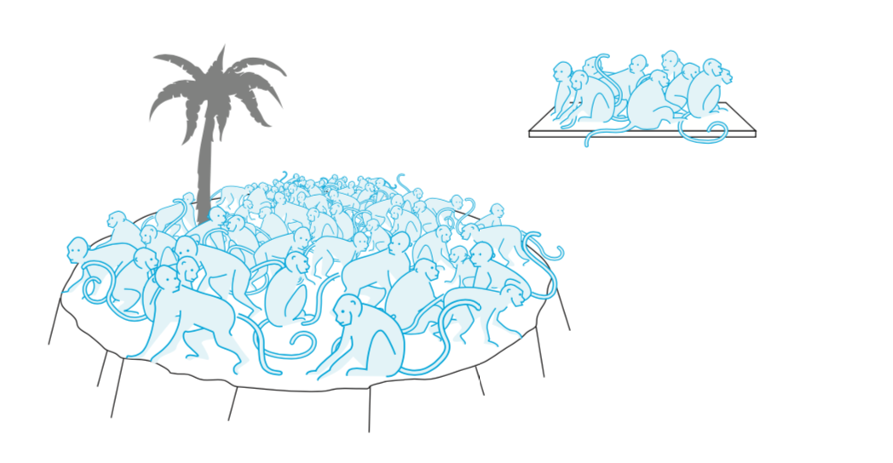
Figuur 4.1: een steekproef van een populatie aapjes
We doen een gedachte experiment. Stel, stel, stel dat je de lengte-score van ieder individueel aapje uit de populatie zou hebben en al die aapjes (of hun scores, maar aapjes leek me gezelliger) in één grote grabbelton zou doen (of denk aan een heel mooi eilandje met alle mogelijke aapjes uit de populatie). Vervolgens trek je - at random (dus met je ogen dicht en goed grabbelen) - \(9\) nieuwe aapjes uit die ton en je berekent het nieuwe gemiddelde (\(\overline{Y}_{nieuw}\)) voor deze negen nieuwe scores (jouw nieuwe steekproef-statistiek dus). Je hebt dan dus een random (iedere aapje uit die grabbelton of populatie had een gelijke kans om getrokken te worden, heel eerlijk dus) steekproef getrokken. Eigenlijk hebben we dat dus al één keer gedaan met onze eigen, \(9\), enige echte aapjes. En bij ons kwam er ‘toevallig’ \(\overline{Y} =150\) cm uit qua gemiddelde (onze enige echte statistiek als steekproefuitkomst).
Maar stel je voor dat we dit proces van steekproeftrekking zouden herhalen, dus negen nieuwe aapjes uit de grabbelton trekken en opnieuw het nieuwe steekproef-gemiddelde zouden berekenen. Wat is op dit moment jouw beste gok qua nieuw gemiddelde? Je weet wat het gemiddelde (en spreiding) is van onze eerste steekproef en dat is alles wat je tot zover écht weet, dus is dat ook de enige informatie, die je überhaupt kan gebruiken, om vast een voorspelling te doen over een nieuw steekproefgemiddelde. Als je een nieuwe steekproef zou trekken, zou je hopelijk verwachten (of gokken) dat het nieuwe steekproefgemiddelde óók waarschijnlijk ergens rond \(150\) cm ligt. Natuurlijk, het kan lager, ongeveer gelijk of hoger zijn dan je eerste en enige echte steekproefgemiddelde. Hoeveel lager of hoger? Het kan natuurlijk zijn dat als je een nieuwe steekproef trekt, je - heel toevallig - de negen grootste apen uit de grabbel-ton trekt en dus een heel hoog gemiddelde krijgt. Maar hoe groot is die kans? Als we aannemen (en laten we maar even doen alsof het ook zo is) dat de populatie normaal verdeeld is qua lengte-score, betekent dat, dat er veel meer aapjes rond het gemiddelde zitten (denk aan vorm van de normaalverdeling) en maar relatief weinig aapjes, zullen zich qua lengte, ver weg van het gemiddelde bevinden. De kans is natuurlijk uiterst klein dat je - precies - de negen grootste apen in je steekproef treft. Zeg maar gerust dat die kans één op oneindig veel is. Stel dat je niet alleen een tweede steekproef uit je ton pakt, maar door blijft gaan tot in oneindigheid (gelukkig hebben we computers die dit soort langdradige spelletjes voor ons kunnen doen, lekker simuleren dus). Hoogstwaarschijnlijk zullen de meeste steekproef-gemiddelden (statistieken) dan rond de \(150\) cm liggen en relatief minder gemiddelden daar ver vandaan. Nu zijn we slechts begonnen met \(9\) aapjes en dat aantal hebben we telkens herhaald. Maar als je ditzelfde spelletje zou doen, maar met een grotere steekproef, zeg \(n = 20\), wat verwacht je dan? Het steekproef-gemiddelde zal bij nieuwe trekkingen (van \(n=20\)) natuurlijk ook variëren, maar wel (veel) minder. Wat moeilijker gezegd, zeggen we ook wel dat het steekproef-gemiddelde zal fluctueren bij herhaling (van steekproeftrekking). De mate van deze fluctuatie of variatie (voor het steekproef-gemiddelde) hangt vooral af van de steekproef-grootte (\(n\)) en de spreiding van de individuele scores in de populatie (\(\sigma_y\)). Als er veel spreiding (grote individuele verschillen, dus grote standaardafwijking) is in een populatie, dan zal bij herhaaldelijk steekproef trekken, het gemiddelde ook meer - of heftiger fluctueren en dus grotere verschillen in waarden tussen al die statistieken laten zien. Maar als je de steekproef-grootte \(n\) vergroot, zal het gemiddelde, bij herhaald steekproef trekken, zich weer stabieler gaan gedragen en dus minder fluctueren. Sterker nog: we hebben daar natuurlijk berekeningen voor zodat we van te voren kunnen bepalen wat er zou gebeuren (qua variatie of spreiding van al die gemiddelden) als we dit langdradige spelletje echt zouden spelen.
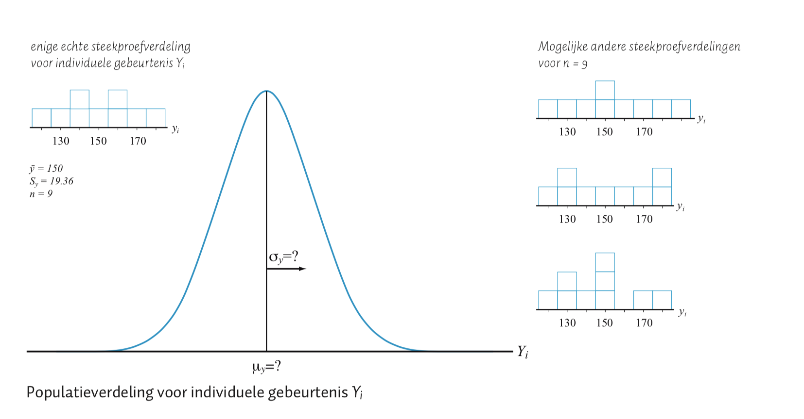
Figuur 4.2: Steekproef van een populatie verdeling
Omdat we maar één echte steekproef van \(n = 9\) hebben genomen en daar de twee statistieken, het gemiddelde en de standaardafwijking (\(\overline{Y} = 150\), \(S_y = 19.36\)) uitrolde (door berekening) en we dus echt géén andere info (echt alle data uit de populatie) kunnen gebruiken, zeggen we dus ook wel dat het gemiddelde en de standaardafwijking de enige, en dus de beste, punt-schatters zijn voor het populatiegemiddelde (\(\mu_y\)) en de populatie-standaardafwijking (\(\sigma_y\)). Natuurlijk hoeven deze schattingen niet precies te kloppen (en dat zal ook wel niet), dus we houden rekening met deze onzekerheid. Hoe groter de steekproef, hoe zekerder je bent dat je schattingen (ongeveer) kloppen. Denk maar eens aan een extreem grote steekproef (bijvoorbeeld een steekproef van bijvoorbeeld \(99\) procent van je gehele populatie). Het zou wel heel raar zijn dat die laatste procent (die je dus niet in je steekproef hebt) aapjes totaal anders zouden zijn dan je steekproef. Wat hier een heel dikke vinger in de pap heeft, is ook wel de wet van heel grote aantallen (soms zegt men ‘getallen’). Denk maar eens aan een gewone dobbelsteen. Als je die een miljoen keer zou gooien, wat zou dan de waarde zijn van de gemiddelde worp? Hoe groot is dan de kans dat je gemiddeld, precies 1 zou gooien? Om precies een gemiddelde van \(1.00000\) (ja, op \(6\) decimalen nauwkeurig) te krijgen, moet je dus elke keer weer, dus een miljoen keer, precies een \(1\) gooien. Ik zou mijn geld er niet op in zetten. Liever gok ik op \(3.5\) (het gemiddelde van een dobbelsteen als je heel vaak gooit, precies in het midden van de minimale waarde \(1\) en de maximale waarde \(6\)). Overigens is de kans dat je precies \(1\) miljoen keer een \(1\) gooit ook wel:
p(precies 1 miljoen keer een 1 gooien) \(= \left( \frac{1}{6}\right)^{1000000}\)
Dus \(\frac{1}{6}\) tot de macht \(1000000\). Als ik dit intype op mijn rekenmachine krijg ik gewoon \(0\) als antwoord, omdat mijn rekenmachine het echte getal (super dicht bij \(0\), maar niet precies \(0\)) simpelweg niet aankan. Praktisch onmogelijk dus dat je een miljoen keer - achter elkaar - de waarde \(1\) gooit! Behoorlijk klein dus (je mag het zelf in-typen, hoogstwaarschijnlijk raakt je rekenmachientje ervan in de war of rond het dus af op de waarde \(0\)).
Het blijkt (uit wiskundige bewijzen en computer simulaties) dat we precies kunnen berekenen hoe een steekproef-gemiddelde (of andere statistieken) zal variëren bij herhaaldelijk steekproef trekken. Als we weten hoe een variabele (een statistiek is ook een variabele, omdat deze ook kan verschillen qua waarde) verdeeld is, kunnen we bijvoorbeeld uitrekenen wat de kans is op een range van mogelijke waarden voor een statistiek. Je kunt dan statististische (onderzoeks-) vragen beantwoorden zoals: ‘Wat is de kans dat het steekproef-gemiddelde hoger zal zijn dan bijvoorbeeld \(160\), gegeven dat we in onze eerste en enige echte steekproef, een gemiddelde vonden van \(150\) en eigenlijk dus iets dichtbij de \(150\) verwachten bij herhaling. Dus we kunnen uitspraken doen over mogelijke waarden die kunnen optreden (als we dus nog een steekproef zouden trekken) en met welke kans deze range (in dit voor beeld dus elke waarde boven de \(160\)) van gebeurtenissen zullen optreden. We vinden deze kansen door gebruik te maken van de steekproeven-verdeling van het gemiddelde (denk dus herhaaldelijk steekproef trekken). Laten we maar gaan knallen en tot echte uitspraken komen. Als we aannemen (dat doen we dus maar even) dat de lengte-scores in de populatie een normaal-verdeling, met een bepaald gemiddelde (\(\mu_y\)) en een bepaalde standaardafwijking (\(\sigma_y\)), volgen en we vervolgens meerdere steekproeven zouden trekken (en dus opnieuw het gemiddelde uitrekenen), dan zullen al die steekproef-gemiddelden, ook normaal verdeeld zijn. Elke normaal verdeling heeft een verwachting (het gemiddelde) en een standaardafwijking. Dus als: \(Y \: \mathtt{\sim} \: N(\mu_{y}; \sigma_y)\) voor een populatie geldt (waarvan je dus ook de waarde van het gemiddelde en de standaardafwijking weet), dan kun je ook zeggen dat als je heel vaak een steekproef zou trekken, van zeg \(n = 16\), en heel vaak het gemiddelde (\(\overline{Y}\)) zou uitrekenen dan zou dit gemiddelde (bij herhaling) zich ook normaal gedragen: \(\overline{Y} \: \mathtt{\sim} \: N(\mu_{\overline{y}}; \sigma_{\overline{y}})\). We kunnen dus zeggen, dat als de indivuduele score (per poppetje) normaal verdeeld is dat het gemiddelde van een steekproef (per steekproef dus) dus ook normaal verdeeld is (bij herhaling van steekproeftrekking). Als we het hebben over de verdeling van een gemiddelde (dus een statistiek) dan hebben we ook wel over de ’steekproevenverdeling van het gemiddelde’. Tuurlijk, als je heel vaak het steekproef trekt en het gemiddelde (\(\overline{Y}\)) berekent, dan zal het gemiddelde van al die gemiddelden (\(\mu_{\overline{y}}\)) wel weer hetzelfde zijn als het populatiegemiddelde (\(\mu_y\)), maar hoe zit dat met de standaardafwijking van het gemiddelde (\(\sigma_{\overline{y}}\)). Misschien verbaast het je niet dat (bij herhaling) individuele scores (\(Y_i\)) meer zullen variëren dan steekproefuitkomsten zoals het steekproefgemiddelde (\(\overline{Y}\)).
4.3 Standaard Normaalverdeling voor Steekproefgemiddelden, \(\overline{Y}\).
Laten we even naar een voorbeeld aan de hand van IQ-scores kijken. We weten, of nemen aan, dat IQ-scores (\(Y_i\)) normaal verdeeld zijn met een gemiddelde van \(100\) IQ-punten en een standaardafwijking van \(15\). Wiskundig gezegd:
\(Y \: \mathtt{\sim} \: N(\mu_{y} = 100; \sigma_y = 15)\) en natuurlijk ook grafisch betekent dit:
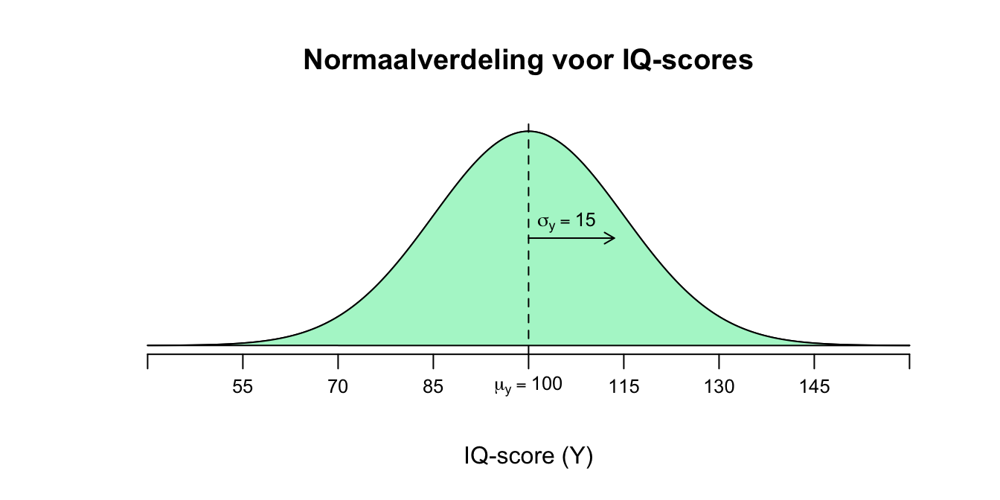
Figuur 4.3: Normaalverdeling voor IQ scores
Dus als we nu heel vaak een steekproef zouden trekken uit deze populatie, en heel vaak het gemiddelde zouden berekenen, en deze gemiddelden ook weer uitzetten in een verdeling, krijgen we dus de steekproevenverdeling voor het gemiddelde (sampling distribution of the mean). Het gemiddelde van deze verdeling (\(\mu_{\overline{y}}\)) zal het zelfde zijn als het gemiddelde van de populatieverdeling:
\(\mu_{\overline{y}}=\mu_y\)
De standaardafwijking van het gemiddelde (\(\sigma_{\overline{y}}\)) is dan als volgt te berekenen (het wiskundig bewijs laat ik even buiten beschouwing):
\(\sigma_{\overline{y}} = \frac{\sigma_y}{\sqrt{n}}\) Waarbij \(n\) dus de steekproefgrootte is.
Dus als we onze waarden (\(\mu_y = 100\), \(\sigma_y = 15\) en telkens een steekproef van \(n=16\)) invullen krijgen we:
\(\mu_{\bar{y}}= \mu_y = 100\) en
\(\sigma_{\bar{y}} = \frac{\sigma_y}{\sqrt{n}} = \frac{15}{\sqrt{16}} = \frac{15}{4} = 3.75\)
En als we dus kunnen aannemen dat de score in de populatie normaal verdeeld is dan zal het steekproefgemiddelde (bij herhaalde steekproeftrekking) dus óók normaal verdeeld zijn:
\(\overline{Y} \: \mathtt{\sim} \: N(\mu_{\bar{y}} = 100; \sigma_{\bar{y}} = 3.75)\) of grafisch:
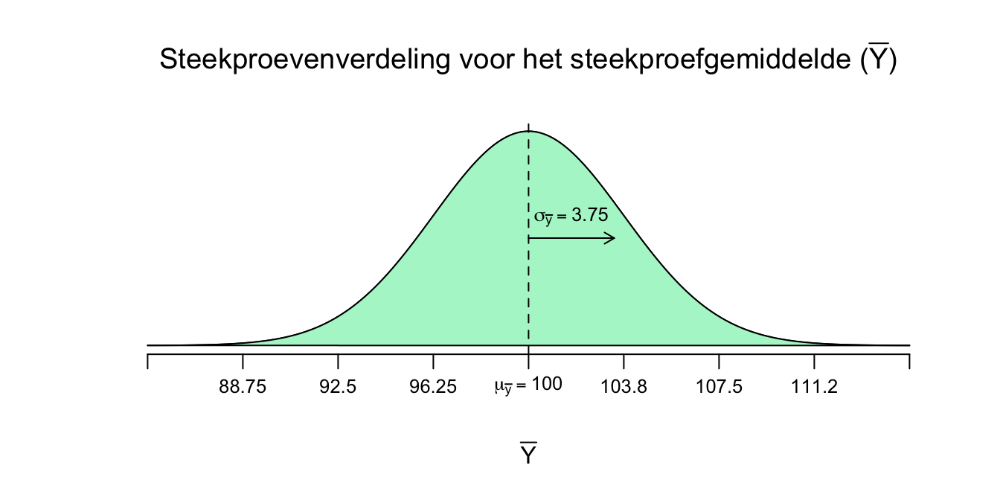
Figuur 4.4: Steekrproevenverdeling voor het steekproefgemiddelde
Als dit allemaal waar is, zou je dus ook kunnen berekenen wat de kans is, dat bij een herhaalde steekroeftrekking, het steekproefgemiddelde (\(\overline{Y}\)) bijvoorbeeld hoger of gelijk zal zijn aan \(\overline{Y} = 108\), of de vraag in wiskundige vorm:
\(P(\overline{Y} \geq 108)=?\)
Laten we de boel meteen tekenen en uitrekenen met onze gegevens:
- \(Y \: \mathtt{\sim} \: N(\mu_{y} = 100; \sigma_y = 15)\)
- Dat we dus een steekproef gaan trekken van \(n=16\)
- En dat we \(P(\overline{Y} \geq 108)\) willen uitrekenen
Om dit op te lossen denken we dus eerst aan de steekproevenverdeling voor het gemiddelde, daarvoor kunnen we dus nu zeggen:
\(\overline{Y} \: \mathtt{\sim} \: N(\mu_{\bar{y}} = 100; \sigma_{\bar{y}} = 3.75)\)
Nu de bijbehorende schets:
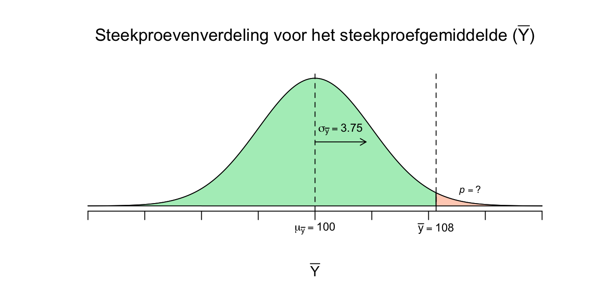
Figuur 4.5: Steekproevenverdeling voor het steekproefgemiddelde
Al hebben we het dus over een steekproevenverdeling, dit is nog steeds een ruwe (ongestandaardieseerde) verdeling. Om bijbehorende kansen (\(p\)-waarden) op te vinden, heb je natuurlijk de standaard normaalverdeling of \(z\)-tabel nodig. Ook hier gaan we van gebeurtenis (\(\overline{Y}\)) via \(z\) naar een \(p\)-waarde:
\(z = \frac{\overline{Y} - \mu_{\bar{y}}}{\sigma_{\bar{y}}}\) en besef nog even hoe we aan \(\sigma_{\bar{y}}\) zijn gekomen:
\(z = \frac{\overline{Y} - \mu_{\bar{y}}}{\sigma_{\bar{y}}} = \frac{\overline{Y} - \mu_{\bar{y}}}{\frac{\sigma_y}{\sqrt{n}}} = \frac{\overline{Y} - \mu_{\bar{y}}}{\sigma_y / \sqrt{n}}\)
\(z = \frac{\overline{Y} - \mu_{\bar{y}}}{\sigma_y / \sqrt{n}}\) Als je denkt in beginwaarden, zoals die bekend zijn voor de populatieverdeling en je steekproefgrootte.
Dus als we wilt weten hoeveel standaardafwijkingen de gebeurtenis \(\overline{Y} = 108\) van het midden vandaan ligt (want dat is natuurlijk de \(z\)-score), moeten we de boel nog even invullen:
\(z = \frac{\overline{Y} - \mu_{\bar{y}}}{\sigma_{\bar{y}}} = \frac{108-100}{3.75} = (108-100)/3.75 = 2.13\) (ik rond weer even af op twee decimalen)
We kunnen dus nu zeggen dat een steekproefgemiddelde van \(\overline{Y} = 108\) dus \(2.13\) standaardafwijkingen (\(\sigma_{\bar{y}}\)) van het gemiddelde vandaan ligt (denk dus: ruim twee lineaaltjes naar rechts). Aan de hand van de \(z\)-tabel kunnen we nu ook bijbehorende overschrijdingskansen opzoeken, ik laat meteen het plaatje erbij zien:
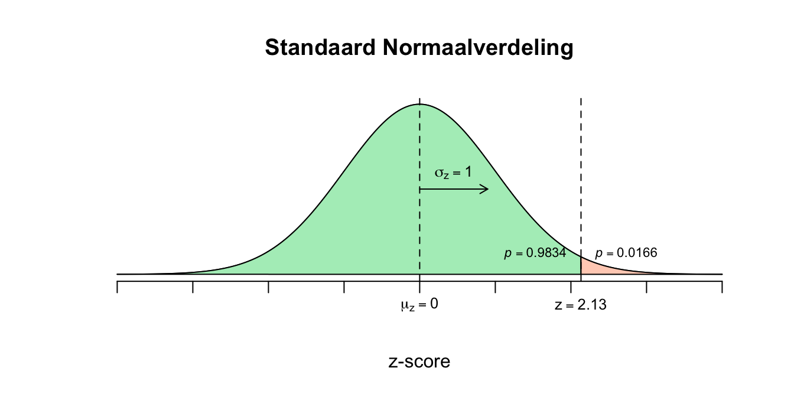
Figuur 4.6: Afstand van 108 tot het gemiddelde van de steekproevenverdeling
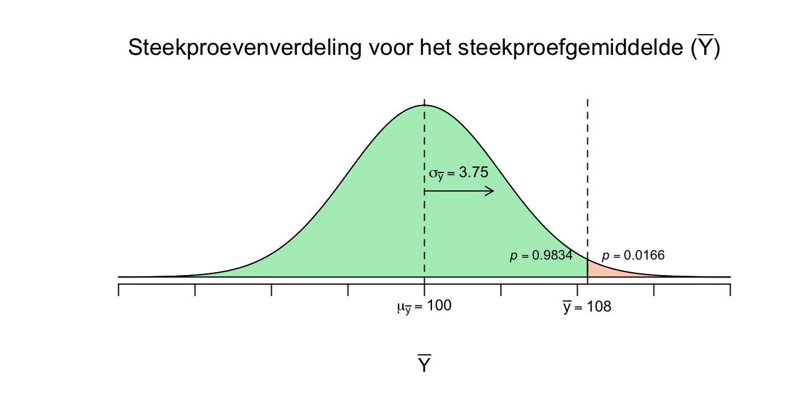
Figuur 4.7: Afstand van 108 tot het gemiddelde van de steekproevenverdeling
Nog even wiskundig:
\(P(\overline{Y} \geq 108) = P(z \geq 2.13) = 1 - P(z \leq 2.13) = 1 -.9834 = .0166\)
Conclusie: we kunnen dus nu zeggen dat de kans \(.0166\) is om een steekproefgemiddelde te vinden hoger gelijk \(108\). Moeten we natuurlijk wel een steekproef nemen van \(n=16\) in een populatie waarvan bekend is dat deze normaal verdeeld is met een gemiddelde van \(100\) en een standaardafwijking van \(15\)!
We kunnen ook nog even de vuistregels voor standaardafwijkingen op deze steekproevenverdeling loslaten. Zo valt, volgens de vuistregel, ongeveer \(95\) procent van alle waarnemingen (hier dus steekproefgemiddelden) tussen twee standaardafwijkingen links en rechts van het midden. Om die ondergrens van het interval te bereiken, wandel je dus twee standaardafwijkingen naar links vanuit het midden: \(\text{ondergrens voor} \: \overline{Y} = 100 - 2 \cdot 3.75 = 92.5\). Om de bovengrens te bereiken wandel je natuurlijk naar rechts: \(\text{bovengrens voor} \: \overline{Y} = 100 + 2 \cdot 3.75 = 107.5\). We kunnen dus nu zeggen dat als je heel vaak een steekproef zou trekken uit deze populatie, dat naar verwachting, \(95\) procent van al deze steekproefgemiddelden tussen de waarden \(\overline{Y}= 92.5\) en \(\overline{Y}= 107.5\) zullen liggen en dus slechts \(2.5\) procent onder de waarde \(\overline{Y}= 92.5\) en natuurlijk slechts \(2.5\) procent boven de waarde \(\overline{Y}= 107.5\). Als je de deze vuistregel los zou laten op de populatie-scores, vind je dat \(95\) procent van alle scores tussen de waarden \(Y=70\) en de waarde \(Y=130\) liggen. Dit \(95\) procent interval, \([70; 130]\) heeft een breedte van \(60\) punten, Vergelijk dit met het interval voor de steekproefgemiddelden \([92.5; 107.5]\) en dus veel minder breed is, slechts \(15\) punten. Steekproefgemiddelden (\(\overline{Y}\)) liggen dus (bijna) altijd dichter op elkaar of bij het midden dan individuele scores (\(Y_i\)).
Maar ja, leuk als dus bekend is wat het populatiegemiddelde (\(\mu_y\)) en de populatiesatandaardafwijking (\(\sigma_y\)) zijn. Maar dat is dus eigenlijk nooit het geval. Beide parameters zijn dus eigenlijk altijd onbekend! Dus wat moeten we dan? Laten we stap voor stap gaan. Denk bijvorbeeld aan de populatie studenten in Nederland en we doen een onderzoek naar hun intelligentie. Een van de meest basale onderzoeksvragen die we kunnen onderzoeken zou dan zijn: Wat is het gemiddelde IQ voor deze populatie studenten? We zijn bij deze onderzoeksvraag dus op zoek naar de waarde van \(\mu_y\). We hebben niet de hele populatie tot onze beschikking en we kunnen dus ook niet met absolute zekerheid zeggen wat die waarde zou moeten zijn. We kunnen natuurlijk wel een steekproef trekken en op basis van het gemiddelde uit die steekproef (\(\overline{Y}\)) een schatting geven voor \(\mu_y\). Gaan we doen. Laten we voor nu nog even aannemen dat we wel weten wat de standaardafwijking voor IQ-scores is voor de populatie Nederlandse studenten (wat dus eigenlijk een absurde aanname is). Laten we aannemen dat deze hetzelfde is als voor de rest van Nederland (nog raardere aanname), dus \(\sigma_y = 15\) en dat deze score normaal verdeeld is. Dan hebben we alleen nog een steekproef nodig. Zeg, we trekken een steekproef van \(16\) studenten, verzamelen hun IQ scores en berekenen het steekproefgemiddelde met een waarde van \(\overline{Y}= 108\). Dus tot zover hebben we dan als gegevens en vraag:
- Onderzoeksvraag: Wat is het populatiegemiddelde?
- Voor deze populatie mogen we aannemen dat \(Y \: \mathtt{\sim} \: N(\mu_{y} = ?; \sigma_y = 15)\)
- Dat we een steekproef hebben getrokken van \(n=16\) en dat daar een gemiddelde van \(\overline{Y} = 108\) uitrolde. Dit is dus onze enige echte steekproef, echt de enige echte dus.
Als ik nu een mes op je keel zou zetten en je zou vragen: Als je moet gokken wat het het ware gemiddelde van studenten (\(\mu_y\)) is, wat zou je dan zeggen, oh ja, en je mag alleen een puntschatting geven, vertel ik er nog even bij. Onze enige echte steekproef heeft \(\overline{Y} = 108\) als resultaat, dus wat zou je zeggen? Natuurlijk zeg je dan niet een ander getal, maar zeg je gewoon dat \(\mu_y\) ook wel \(108\) zal zijn. Natuurlijk, als we vandaag, in onze enige echte steekproef \(108\) vinden wil dat niet meteen zeggen dat het het ware populatiegemiddelde dat ook precies moet zijn, maar waarschijnlijk wel ongeveer zoiets. Denk in puntschattingen als je maar één getal mag geven als beste gok. Een puntschatting is arrogant en onveilig en vaak dus ook niet waar want het echte gemiddelde zal heus wel net iets hoger of net iets lager kunnen liggen. Helaas niet te checken zonder de hand van een alwetend iemand, zoals God. In de statistiek beantwoorden we deze onderzoeksvraag op een iets veiligere manier (dan alleen een puntschatting), maar toch, denk alsjeblieft altijd eerst even in puntschattingen en doe dus maar gewoon even arrogant, je hoeft niet altijd gelijk te hebben toch? Een veiliger antwoord op de vraag ‘Wat is het populatiegemiddelde?’, zou zijn: Het ware populatiegemiddelde (\(\mu_y\)) ligt ergens rond de \(108\). Maar wat is ergens en rond? Hoe precies moeten we zijn of hoeveel zekerheid willen we hebben? Okay, we maken onze onderzoeksvraag iets verfijnder:
Waar ligt (wat is), met \(95\) procent zekerheid, het ware populatiegemiddelde? En met deze vraag bedoelen we vooral: tussen welke twee waarden (ondergrens en bovengrens) ligt het ware gemiddelde met \(95\) procent zekerheid. Daar gaan we weer en we werken met de volgende gegevens (ik kan het niet genoeg herhalen):
- Onderzoeksvraag: Tussen welke twee waarden ligt het populatiegemiddelde (\(\mu_y\)) voor studenten in Nederland met \(95\) procent zekerheid?
- Voor deze populatie mogen we aannemen dat \(Y \: \mathtt{\sim} \: N(\mu_{y} = ?; \sigma_y = 15)\)
- Dat we slechts één steekproef hebben getrokken van \(n=16\) en dat daar een gemiddelde van \(\overline{Y} = 108\) uitrolde. Dit is dus nog steeds onze enige echte steekproef.
We hebben dus nu een grabbelton met oneindig veel studenten met hun IQ-scores, waarvan alleen bekend is wat de standaardafwijking (\(\sigma_y\)) is en dat de scores normaal verdeeld zijn. We hebben slechts één steekproef uit deze ton getrokken en daar rolde dus een gemiddelde uit van \(\overline{Y} = 108\). natuurlijk had die steekproef ook een standaardafwijking \(S_y\), maar lekker boeiend, als je al weet wat de standaardafwijking in de populatie is (\(\sigma_y = 15\)). Nu gaan we de twee grenzen zoeken. Om dit te doen moet je jezelf afvragen wat er zou gebeuren als we, na de enige echte, nog heel veel anderen steekproeven van \(n=16\) zouden nemen. Onze beste gok, voor de eerstvolgende steekproef zou zijn dat die ook wel weer een gemiddelde van \(\overline{y} = 108\) zal hebben, of natuurlijk daar ergens in de buurt, want door steekproeffluctuatie vind je niet altijd precies hetzelfde. Sterker nog: omdat we weten wat \(\sigma_y\) en de steekproefgrootte is, weten we ook hoe het steekproefgemiddelde (\(\overline{Y}\)) zal variëren (verschillen) namelijk:
\(\sigma_{\bar{y}} = \frac{\sigma_y}{\sqrt{n}} = \frac{15}{\sqrt{16}} = 3.75\)
Hiermee kunnen we dus weer een steekproevenverdeling tekenen! Ons uitgangspunt (het midden of gemiddelde van de verdeling) is nu nog steeds het gemiddelde van de enige echte!
Figuur 4.8: Steekproevenverdeling voor het steekproefgemiddelde
Omdat we nu weten hoe het steekproefgemiddelde zich gedraagt, kunnen we ook kijken hoe het met de middelste \(95\) procent van alle mogelijke gemiddelden zit. Volgens de vuistregels voor standaardafwijkingen, moet je twee standaardafwijkingen naar links en naar rechts wandelen (vanuit het midden) om ongeveer \(95\) procent van alle gebeurtenissen (dus de mogelijke \(\overline{Y}\)-tjes, bij herhaalde steekproeftrekking) te pakken (denk dus driedeling met een midden stuk van \(95\) procent en twee staartjes van \(2.5\) procent). Dus:
Ondergrens voor \(\overline{Y}\): \(\overline{Y} - 2 \cdot \sigma_{\bar{y}} = 108 - 2 \cdot 3.75 = 100.50\)
Bovengrens voor \(\overline{Y}\): \(\overline{Y} + 2 \cdot \sigma_{\bar{y}} = 108 + 2 \cdot 3.75 = 115.50\)
Of in plaatje:
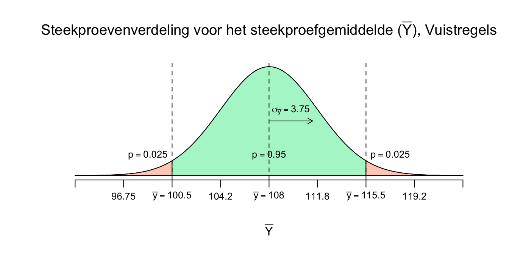
Figuur 4.9: Steekproevenverdeling voor het steekproefgemiddelde met standaard afwijking.
We kunnen dus nu stellen dat je met \(95\) procent zekerheid, bij herhaalde steekproeftrekking, dus een steekproefgemiddelde (\(\overline{Y}\)) ergens tussen de waarden \(\overline{Y}_{\text{ondergrens}} = 100.50\) en \(\overline{Y}_{\text{bovengren}} = 115.50\) zal vallen, of ook wel:
\(P(100.50 \leq \overline{Y} \leq 115.50) = .95\)
En nu komt ie: We maken nu een beetje een sprongetje en zeggen dan (interpreteren dit als) dat het ware populatie gemiddelde (\(\mu_y\)), met \(95\) procent zekerheid dus ergens tussen de \(100.5\) en de \(115.5\) zal liggen. Wij simpele statistici interpreten het zo, officieel is de interpretatie wat anders, maar daar ga ik je nu niet mee vervelen, echt nergens voor nodig, doet alleen maar pijn! Dus we houden het gewoon zo. Nog wel even formeel en wat wiskundiger: Wat we nu hebben gedaan is het \(95\) procent Betrouwbaarheidsinterval (Condidence Interval, \(CI\)) berekend voor het ware gemiddelde van de populatie, opgegeschreven als volgt:
\(95\%\) \(CI\) voor \(\mu_y\) is \([100.50 ;\: 115.50]\) of:
\(95\%\) \(CI\) voor \(\mu_y\) is \(108 \pm 7.50\).
Bij deze laatste denk je dus vanuit het midden (\(\overline{Y}\)), onze puntschatting dus voor \(\mu_y\) en je laat zien hoeveel het ware gemiddelde onder en boven de puntschatting kan liggen, met \(95\) zekerheid dus. De hoeveelheid (afstand) dat het ware gemiddelde maximaal naast je puntschatting kan zitten (hier \(7.50\) punten), noemen we de margin of error (de foutmarge), een soort ‘give or take’ gevoel dus. In ons geval heeft de margin of error (kortweg \(m\)) dus precies gelijk aan \(2 \cdot \sigma_{\bar{y}}\) (vanwege de vuistregels voor standaardafwijkingen) en deze margin of error heb je dus ook nodig om je ondergrens (lowerbound) en bovengrens (upperbound) te berekenen:
lower and upperbound for \(\mu_y\): \(\:\:\:\overline{Y} \pm m\)
Dus één keer invullen met een minnetje (voor de ondergrens) en één keer met een plusje voor de bovengrens. Bij ons is de margin of error dus gelijk \(2\) keer de standaardafwijking (\(\sigma_{\bar{y}}\)). Maar die \(2\) is vanwege vuistregels en een betrouwbaarheidsniveau van \(95\) procent. Maar hoeveel standaardafwijkingen moet je precies wandelen om die \(95\) procents grenzen te bereiken? Daar voor hebben we natuurlijk de standaard normaaltabel, dus aan de hand van \(z\)-scores. De \(z\)-waarde die bij een betrouwbaarheidsniveau (confidence level) van precies \(95\) procent hoort is natuurlijk de Heilige \(z\)-waarde. Die moest je van mij al uit je hoofd leren, omdat ie zo belangrijk is. De Heilige \(z\)-waarde is \(z^{*} = 1.96\), als je dus \(1.96\) standaardafwijking naar links en naar rechts wandelt, pak je precies \(95\) procent in het midden, en heb je dus twee staartjes van \(2.5\) procent, een mooie symmetrische driedeling dus. Eerst plaatje, dan formules.
Figuur 4.10: Steekproevenverdeling, de middelste 95%
Het scheelt niet veel, maar als je goed kijkt zie dat het betrouwbaarheidsinterval iets smaller is en dus een iets kleinere margin of error heeft, omdat we nu dus maar \(1.96\) standaardafwijkingen opzij zijn gegaan. Op basis van deze berekening (ik laat hem zo zien) kunnen we dus stellen dat het ware gemiddelde (\(\mu_y\)), met \(95\) procent betrouwbaarheid, dus ergens tussen de \(100.65\) en de \(115.35\) ligt:
\(95\%\) \(CI\) voor \(\mu_y\) is \([100.65 ;\: 115.35]\) of:
\(95\%\) \(CI\) voor \(\mu_y\) is \(108 \pm 7.35\).
Dus nu, in verschillende formules, hoe je de lower- en upperbound kan uitrekenen en dan niet aan de hand van de vuistregels maar aan de hand van de standaardnormaal tabel, met \(z\)-scores dus die ons precies vertellen, voor een bepaald betrouwbaarheidsniveau, hoeveel standaardafwijkingen je naar links en naar rechts moet om bij je grensen te komen:
\(CI\) voor \(\mu_y\): \(\:\:\:\overline{Y} \pm z^{*} \cdot \sigma_{\bar{y}}\)
Waarbij \(z^{*}\) dus staat voor ‘de nog op te zoeken \(z\)-waarde behorend bij het betrouwbaarheidsniveau (\(80\%\), \(90\%\), \(95\%\), \(99\%\) enzovoort) dat je wil gebruiken’
In plaats van \(\sigma_{\bar{y}}\) in de formule te stoppen, kan je deze ook vervangen door beginwaarden (dus populatiestandaardafwijking en steekproefgrootte)
\(CI\) voor \(\mu_y\): \(\:\:\:\overline{Y} \pm z^{*} \cdot \frac{\sigma_y}{\sqrt{n}}\) of gesplit:
\(CI\) voor \(\mu_y\): \(\:\:\:\overline{Y} \pm m, \:\:\:\) met \(m = z^{*} \cdot \frac{\sigma_y}{\sqrt{n}}\)
Dit laatste kom je ook vaak tegen, waar ze dus even apart uitgeschreven hebben hoe je de margin of error berekend.
Maar ach ach, wat een onzin allemaal, alsof de standaardafwijking van een populatie (\(\sigma_y\)) bekend is!
4.4 Student’s \(t\)-verdeling voor Steekproefgemiddelden, \(\overline{Y}\).
Eindelijk komen we in de echte wereld, een wereld vol met onzekerheden. Waarom zou je dingen aannemen dat ze zo zijn? Als je dingen niet kunt checken, laat het dan ook gewoon zo, en maak de wereld niet mooier dan die (al) is, please people, get real! We gaan de bestaande en ware onzekerheden dus inbouwen in onze berekeningen. Eindelijk naar de echte statistiek wereld (waar we nog steeds aannames doen over een populatie, maar gelukkig wel een stuk minder). Dit is ook de wereld van Wijsneuzen die willen promoveren, en dat echt niet meer aan de hand van een rekenmachine doen, maar gewoon, als ze echt slim zijn, daar software programma’s als ‘JASP’ of ‘R’ voor gebruiken (SPSS is voor wannebe’s of mensen die liever hun geld uitgeven aan onzin i.p.v. van onderwijs of zorg, moge mijn frustratie over regulier onderwijs duidelijk zijn)
Betrouwbaarheidsintervallen voor een populatiegemiddelde.
We gaan weer naar betrouwbaarheidsintervallen voor het ware populatiegemiddelde (\(\mu_y\)) kijken, maar nu aan de hand van de \(t\)-verdeling (ook wel Student’s \(t\)-distribution), waarbij we geen aannamens meer hoeven te doen over de standaardafwijking voor de populatie (\(\sigma_y\)). Mocht je een grote steekproef trekken, dan boeit de normaliteits-aannname (normaal verdeelde populatie scores) eigenlijk ook niet meer. Want elk steekproefgemiddelde gedraagt zich bij benadering normaal (bij herhaalde steekproeftrekking) als de steekproef maar groot genoeg is.
Ik ga weer even terug naar onze aapjes en we gaan onderzoeken wat het echte populatie gemiddelde (\(\mu_y\)) zou kunnen zijn met \(95\) procent zekerheid:
Het enige wat we tot zover weten over onze aapjes:
- Een steekproef van \(n=9\)
- berekende statistieken voor hun lengte in cm: \(\overline{Y} = 150\), de variantie: \(S_y^2 = 375\) en dus de standaardafwijking: \(S_y = \sqrt{375} = 19.365\)
- We nemen (jammer genoeg) alleen aan dat de populatie normaal verdeeld is, dus:
\(Y \: \mathtt{\sim} \: N(\mu_{y} = ?; \sigma_y = ?)\)
- Onze onderzoeksvraag: Wat is, met \(95\) procent zekerheid het ware gemiddelde (\(\mu_{y}\))?
Als sigma (de standaardafwijking voor de populatie, \(\sigma_y\)) bekend zou zijn, konden we de standaardafwijking voor het gemiddelde \(\sigma_{\bar{y}}\) uitrekenen zodat we weten hoe het gemiddelde zal variëren in de steekproe_ven_verdeling:
\(\sigma_{\bar{y}} = \frac{\sigma_y}{\sqrt{n}}\)
Alleen \(\sigma_y\) is onbekend, helaas dus. We kunnen \(\sigma_{\bar{y}}\) dus niet uitrekenen en dus ook niet weten wat de precieze waarde ervan is. Maar als ik je zou vragen, doe is een gok, wat zou jouw puntschatting voor \(\sigma_y\) zijn? Ik hoop dat je dan zou zeggen: Nou, de steekproef, onze enige echte, heeft een standaard afwijking van \(S_y = 19.365\), dus dat zal dan ook wel de beste puntschatting zijn voor \(\sigma_y\), maar het zou best iets meer of iets minder kunnen zijn. Wij hebbenn maar negen aapjes in onze steekproef, maar stel dat je honderd aapjes zou hebben, met nog steeds een standaardafwijking van \(S_y = 19.365\), ben je het dan ook met me eens dat je iets zekerder zou zijn dat die puntschatting wel is zou kloppen? De mate van zekerheid waarmee je schattingen doet, hangt vooral af van de grootte van je steekproef. Als je een heel grote steekproef neemt, ben je ook iets zekerder dat jouw schattingen niet te ver zullenn afwijken van de populatiewaarden. En dit (de grootte van je steekproef \(n\)) is precies waar de \(t\)-verdeling rekening mee houdt en dus corrigeert voor de mate van onzekerheid door de groote van je steekproef. We kijken niet direkt naar de grootte, maar we drukken die zekerheid uit in het aantal vrijheidsgraden, of ook wel degrees of freedom, kortweg \(df\). Hoe meer vrijheidsgraden hoe zekerder je bent dat de boel wel is zou kunnen kloppen. Verder blijven de berekeningen bijna hetzelfde, of beter, het gevoel zou niet moeten veranderen.
In de formule voor de standaardafwijking voor het steekproefgemiddelde:
\(\sigma_{\bar{y}} = \frac{\sigma_y}{\sqrt{n}}\)
vervangen we \(\sigma_y\) door \(S_y\) omdat deze de puntschatter hiervoor is en we geven de standaardafwijking voor het gemiddelde, \(\sigma_{\bar{y}}\) een nieuwe naam, de Standaardfout voor het gemiddelde. Standard Error for the mean in het Engels, afgekort met \(SE\):
\(SE_{\bar{y}} = \frac{S_y}{\sqrt{n}}\)
Zoals bij elke standaardafwijking denk je - dus nog steeds - de gemiddelde gokfout wanneer je het spelletje speelt, maar nu voorspel je dus wel de waarde van een statistiek, hier het gemiddelde \(\overline{Y}\) En de standaardfout (of -error) vertelt je dus hoeveel, de mogelijke gemiddelden in je steekproevenverdeling verdeeld zijn, dus in hoeverre van elkaar verschillen (hoever ze gemiddeld van het midden vandaan liggen).
\(z\)-score (gestandaardiseerde score)
Een \(z\) – score is het aantal standaardafwijkingen dat een ruwe gebeurtenis verwijderd zit van het gemiddelde (of andere verwachting).
\(t\)-score (ook een gestandaardiseerde score)
Een \(t\) – score is het aantal standaard errors dat een ruwe gebeurtenis (een statistiek) verwijderd zit van de verwachting (vaak, maar niet altijd het gemiddelde).
Bij ons is de waarde voor \(S_y\) dus \(19.365\) de steekproefgrootte gelijk aan \(n=9\) en kunnen we de standard error voor gemiddelde dus uitrekenen:
\(SE_{\bar{y}} = \frac{19.365}{\sqrt{9}} = 6.455\)
Nu we dus weten wat de waarde voor de standaard error voor het gemiddelde is (\(SE_{\bar{y}} = 6.455\)) kunnen we dus ook de steekproevenverdeling tekenen. Ho, stop! voor elke verschillende waarde van onzekerheid, dus steekproefgrootte (uitgedrukt in vrijheidsgraden, \(df\)), is er een aparte vorm van verdeling. Gelukkig voor ons, hoeven we daar ons geen zorgen te maken, wij hebben immers de \(t\)-tabel, die voor verschillende waarden van \(df\) én een bepaalde \(p\)-waarde, ons de juiste \(t\)-waarden geeft. Het aantal vrijheidsgraden kun je berekenen door simpelweg je steekproefgrootte \(n\) min \(1\) te doen (net zoals bij de berekening van de variantie (\(S^2\)) en Standaardafwijking (\(S\)) voor een steekproef). Bij ons wordt het aantal vrijheidsgraden voor de \(t\)-verdeling die we willen zien dus:
\(df = n-1 = 9 - 1 = 8\)
Met ons enige echte steekproefgemiddelde in het midden, want dat blijft ons uitgangspunt (midden, puntschatting, je eerste gok voor het ware gemiddelde). Want dat is het doel, een schatting doen voor het ware gemiddelde op basis van ons steekproefgemiddelde. Ik laat jullie eerst de ‘ruwe’ verdeling zien voor \(df = 8\), waarbij elk sprongetje op de horizontale as overeenkomt met precies één standaard error (\(SE_{\bar{y}}\)):
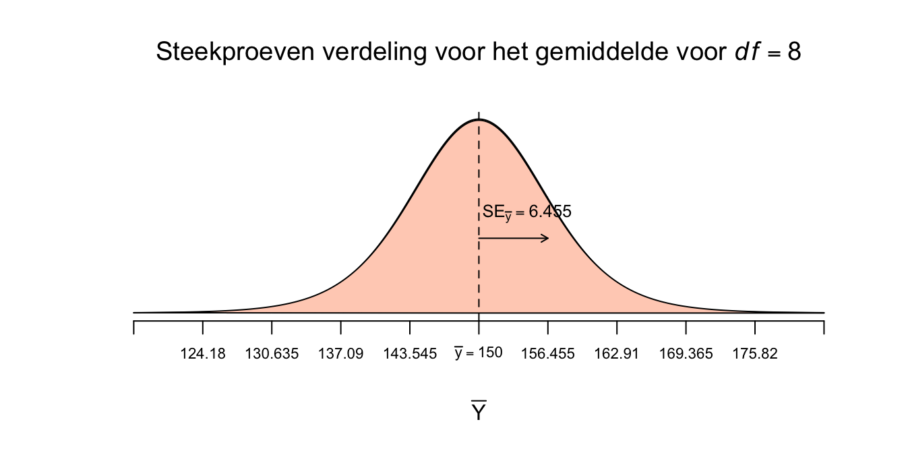
Figuur 4.11: Steekproevenverdeling met SE van 6.455
Volgens de vuistregels moet je \(2\) standaard errors naar links en naar rechts wandelen, om de ondergrens en bovengrens voor \(95\) procent te bereiken (jaja, we zijn nog steeds bezig met het \(95\) procent betrouwbaarheidsinterval voor \(\mu_y\)). Volgens standaard normaalverdeling moet je precies \(1.96\) standaard errors (afwijkingen) wandelen. Maar wij hebben nu te maken met die extra onzekerheid over onze schatting voor \(\sigma_y\). We hebben dus nu (eindelijk) de \(t\)-verdeling nodig, voor \(df = 8\), om te weten hoeveel standaard errors we naar links en naar rechts moeten wandelen. De \(t\)-tabel geeft ons hier eindelijk verlichting en dan kijken we natuurlijk wel bij \(df=8\) en een upper tail van \(p=.025\), of meteen bij een Confidence Level (betrouwbaarheidsniveau) van \(95\) procent, om het juiste aantal standaard errors te vinden (of te wel de juist \(t\)-waarde voor \(df = 8\)). Net zoals bij \(z\), betekent \(t\) gewoon het aantal standaard errors van het midden vandaan, dus kijk bij de rij voor \(df = 8\) en een bij de kolom voor uppertail (rechteroverschrijdingskans) van \(p=.025\):
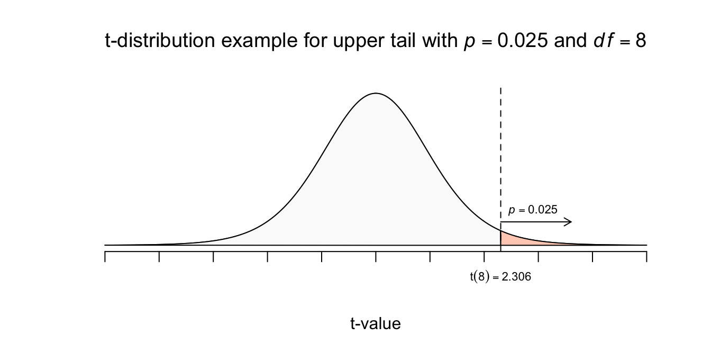
Figuur 4.12: t-distributievoorbeeld met df = 8 en upper tail van p=0.025
| df | .25 | .20 | .15 | .10 | .05 | .025 | .02 | .01 | 0.005 | .0025 | .001 | .0005 |
|---|---|---|---|---|---|---|---|---|---|---|---|---|
| 1 | 1.000 | 1.376 | 1.963 | 3.078 | 6.314 | 12.706 | 15.895 | 31.821 | 63.657 | 127.321 | 318.309 | 318.309 |
| 2 | 0.816 | 1.061 | 1.386 | 1.886 | 2.920 | 4.303 | 4.849 | 6.965 | 9.925 | 14.089 | 22.327 | 22.327 |
| 3 | 0.765 | 0.978 | 1.250 | 1.638 | 2.353 | 3.182 | 3.482 | 4.541 | 5.841 | 7.453 | 10.215 | 10.215 |
| 4 | 0.741 | 0.941 | 1.190 | 1.533 | 2.132 | 2.776 | 2.999 | 3.747 | 4.604 | 5.598 | 7.173 | 7.173 |
| 5 | 0.727 | 0.920 | 1.156 | 1.476 | 2.015 | 2.571 | 2.757 | 3.365 | 4.032 | 4.773 | 5.893 | 5.893 |
| 6 | 0.718 | 0.906 | 1.134 | 1.440 | 1.943 | 2.447 | 2.612 | 3.143 | 3.707 | 4.317 | 5.208 | 5.208 |
| 7 | 0.711 | 0.896 | 1.119 | 1.415 | 1.895 | 2.365 | 2.517 | 2.998 | 3.499 | 4.029 | 4.785 | 4.785 |
| 8 | 0.706 | 0.889 | 1.108 | 1.397 | 1.860 | 2.306 | 2.449 | 2.896 | 3.355 | 3.833 | 4.501 | 4.501 |
| 9 | 0.703 | 0.883 | 1.100 | 1.383 | 1.833 | 2.262 | 2.398 | 2.821 | 3.250 | 3.690 | 4.297 | 4.297 |
| 10 | 0.700 | 0.879 | 1.093 | 1.372 | 1.812 | 2.228 | 2.359 | 2.764 | 3.169 | 3.581 | 4.144 | 4.144 |
| 11 | 0.697 | 0.876 | 1.088 | 1.363 | 1.796 | 2.201 | 2.328 | 2.718 | 3.106 | 3.497 | 4.025 | 4.025 |
| 12 | 0.695 | 0.873 | 1.083 | 1.356 | 1.782 | 2.179 | 2.303 | 2.681 | 3.055 | 3.428 | 3.930 | 3.930 |
| 13 | 0.694 | 0.870 | 1.079 | 1.350 | 1.771 | 2.160 | 2.282 | 2.650 | 3.012 | 3.372 | 3.852 | 3.852 |
| 14 | 0.692 | 0.868 | 1.076 | 1.345 | 1.761 | 2.145 | 2.264 | 2.624 | 2.977 | 3.326 | 3.787 | 3.787 |
| 15 | 0.691 | 0.866 | 1.074 | 1.341 | 1.753 | 2.131 | 2.249 | 2.602 | 2.947 | 3.286 | 3.733 | 3.733 |
| 16 | 0.690 | 0.865 | 1.071 | 1.337 | 1.746 | 2.120 | 2.235 | 2.583 | 2.921 | 3.252 | 3.686 | 3.686 |
| 17 | 0.689 | 0.863 | 1.069 | 1.333 | 1.740 | 2.110 | 2.224 | 2.567 | 2.898 | 3.222 | 3.646 | 3.646 |
| 18 | 0.688 | 0.862 | 1.067 | 1.330 | 1.734 | 2.101 | 2.214 | 2.552 | 2.878 | 3.197 | 3.610 | 3.610 |
| 19 | 0.688 | 0.861 | 1.066 | 1.328 | 1.729 | 2.093 | 2.205 | 2.539 | 2.861 | 3.174 | 3.579 | 3.579 |
| 20 | 0.687 | 0.860 | 1.064 | 1.325 | 1.725 | 2.086 | 2.197 | 2.528 | 2.845 | 3.153 | 3.552 | 3.552 |
| 21 | 0.686 | 0.859 | 1.063 | 1.323 | 1.721 | 2.080 | 2.189 | 2.518 | 2.831 | 3.135 | 3.527 | 3.527 |
| 22 | 0.686 | 0.858 | 1.061 | 1.321 | 1.717 | 2.074 | 2.183 | 2.508 | 2.819 | 3.119 | 3.505 | 3.505 |
| 23 | 0.685 | 0.858 | 1.060 | 1.319 | 1.714 | 2.069 | 2.177 | 2.500 | 2.807 | 3.104 | 3.485 | 3.485 |
| 24 | 0.685 | 0.857 | 1.059 | 1.318 | 1.711 | 2.064 | 2.172 | 2.492 | 2.797 | 3.091 | 3.467 | 3.467 |
| 25 | 0.684 | 0.856 | 1.058 | 1.316 | 1.708 | 2.060 | 2.167 | 2.485 | 2.787 | 3.078 | 3.450 | 3.450 |
| 26 | 0.684 | 0.856 | 1.058 | 1.315 | 1.706 | 2.056 | 2.162 | 2.479 | 2.779 | 3.067 | 3.435 | 3.435 |
| 27 | 0.684 | 0.855 | 1.057 | 1.314 | 1.703 | 2.052 | 2.158 | 2.473 | 2.771 | 3.057 | 3.421 | 3.421 |
| 28 | 0.683 | 0.855 | 1.056 | 1.313 | 1.701 | 2.048 | 2.154 | 2.467 | 2.763 | 3.047 | 3.408 | 3.408 |
| 29 | 0.683 | 0.854 | 1.055 | 1.311 | 1.699 | 2.045 | 2.150 | 2.462 | 2.756 | 3.038 | 3.396 | 3.396 |
| 30 | 0.683 | 0.854 | 1.055 | 1.310 | 1.697 | 2.042 | 2.147 | 2.457 | 2.750 | 3.030 | 3.385 | 3.385 |
| 40 | 0.681 | 0.851 | 1.050 | 1.303 | 1.684 | 2.021 | 2.123 | 2.423 | 2.704 | 2.971 | 3.307 | 3.307 |
| 50 | 0.679 | 0.849 | 1.047 | 1.299 | 1.676 | 2.009 | 2.109 | 2.403 | 2.678 | 2.937 | 3.261 | 3.261 |
| 60 | 0.679 | 0.848 | 1.045 | 1.296 | 1.671 | 2.000 | 2.099 | 2.390 | 2.660 | 2.915 | 3.232 | 3.232 |
| 80 | 0.678 | 0.846 | 1.043 | 1.292 | 1.664 | 1.990 | 2.088 | 2.374 | 2.639 | 2.887 | 3.195 | 3.195 |
| 100 | 0.677 | 0.845 | 1.042 | 1.290 | 1.660 | 1.984 | 2.081 | 2.364 | 2.626 | 2.871 | 3.174 | 3.174 |
| 1000 | 0.675 | 0.842 | 1.037 | 1.282 | 1.646 | 1.962 | 2.056 | 2.330 | 2.581 | 2.813 | 3.098 | 3.098 |
| \(z^{*}\) | 0.674 | 0.842 | 1.036 | 1.282 | 1.645 | 1.960 | 2.054 | 2.326 | 2.576 | 2.807 | 3.090 | 3.291 |
| df | .25 | .20 | .15 | .10 | .05 | .025 | .02 | .01 | 0.005 | .0025 | .001 | .0005 |
|---|---|---|---|---|---|---|---|---|---|---|---|---|
| 1 | 1 | 1.376 | 1.963 | 3.078 | 6.314 | 12.71 | 15.89 | 31.82 | 63.66 | 127.3 | 318.3 | 318.3 |
| 2 | 0.8165 | 1.061 | 1.386 | 1.886 | 2.92 | 4.303 | 4.849 | 6.965 | 9.925 | 14.09 | 22.33 | 22.33 |
| 3 | 0.7649 | 0.9785 | 1.25 | 1.638 | 2.353 | 3.182 | 3.482 | 4.541 | 5.841 | 7.453 | 10.21 | 10.21 |
| 4 | 0.7407 | 0.941 | 1.19 | 1.533 | 2.132 | 2.776 | 2.999 | 3.747 | 4.604 | 5.598 | 7.173 | 7.173 |
| 5 | 0.7267 | 0.9195 | 1.156 | 1.476 | 2.015 | 2.571 | 2.757 | 3.365 | 4.032 | 4.773 | 5.893 | 5.893 |
| 6 | 0.7176 | 0.9057 | 1.134 | 1.44 | 1.943 | 2.447 | 2.612 | 3.143 | 3.707 | 4.317 | 5.208 | 5.208 |
| 7 | 0.7111 | 0.896 | 1.119 | 1.415 | 1.895 | 2.365 | 2.517 | 2.998 | 3.499 | 4.029 | 4.785 | 4.785 |
| 8 | 0.7064 | 0.8889 | 1.108 | 1.397 | 1.86 | 2.306 | 2.449 | 2.896 | 3.355 | 3.833 | 4.501 | 4.501 |
| 9 | 0.7027 | 0.8834 | 1.1 | 1.383 | 1.833 | 2.262 | 2.398 | 2.821 | 3.25 | 3.69 | 4.297 | 4.297 |
| 10 | 0.6998 | 0.8791 | 1.093 | 1.372 | 1.812 | 2.228 | 2.359 | 2.764 | 3.169 | 3.581 | 4.144 | 4.144 |
| 11 | 0.6974 | 0.8755 | 1.088 | 1.363 | 1.796 | 2.201 | 2.328 | 2.718 | 3.106 | 3.497 | 4.025 | 4.025 |
| 12 | 0.6955 | 0.8726 | 1.083 | 1.356 | 1.782 | 2.179 | 2.303 | 2.681 | 3.055 | 3.428 | 3.93 | 3.93 |
| 13 | 0.6938 | 0.8702 | 1.079 | 1.35 | 1.771 | 2.16 | 2.282 | 2.65 | 3.012 | 3.372 | 3.852 | 3.852 |
| 14 | 0.6924 | 0.8681 | 1.076 | 1.345 | 1.761 | 2.145 | 2.264 | 2.624 | 2.977 | 3.326 | 3.787 | 3.787 |
| 15 | 0.6912 | 0.8662 | 1.074 | 1.341 | 1.753 | 2.131 | 2.249 | 2.602 | 2.947 | 3.286 | 3.733 | 3.733 |
| 16 | 0.6901 | 0.8647 | 1.071 | 1.337 | 1.746 | 2.12 | 2.235 | 2.583 | 2.921 | 3.252 | 3.686 | 3.686 |
| 17 | 0.6892 | 0.8633 | 1.069 | 1.333 | 1.74 | 2.11 | 2.224 | 2.567 | 2.898 | 3.222 | 3.646 | 3.646 |
| 18 | 0.6884 | 0.862 | 1.067 | 1.33 | 1.734 | 2.101 | 2.214 | 2.552 | 2.878 | 3.197 | 3.61 | 3.61 |
| 19 | 0.6876 | 0.861 | 1.066 | 1.328 | 1.729 | 2.093 | 2.205 | 2.539 | 2.861 | 3.174 | 3.579 | 3.579 |
| 20 | 0.687 | 0.86 | 1.064 | 1.325 | 1.725 | 2.086 | 2.197 | 2.528 | 2.845 | 3.153 | 3.552 | 3.552 |
| 21 | 0.6864 | 0.8591 | 1.063 | 1.323 | 1.721 | 2.08 | 2.189 | 2.518 | 2.831 | 3.135 | 3.527 | 3.527 |
| 22 | 0.6858 | 0.8583 | 1.061 | 1.321 | 1.717 | 2.074 | 2.183 | 2.508 | 2.819 | 3.119 | 3.505 | 3.505 |
| 23 | 0.6853 | 0.8575 | 1.06 | 1.319 | 1.714 | 2.069 | 2.177 | 2.5 | 2.807 | 3.104 | 3.485 | 3.485 |
| 24 | 0.6848 | 0.8569 | 1.059 | 1.318 | 1.711 | 2.064 | 2.172 | 2.492 | 2.797 | 3.091 | 3.467 | 3.467 |
| 25 | 0.6844 | 0.8562 | 1.058 | 1.316 | 1.708 | 2.06 | 2.167 | 2.485 | 2.787 | 3.078 | 3.45 | 3.45 |
| 26 | 0.684 | 0.8557 | 1.058 | 1.315 | 1.706 | 2.056 | 2.162 | 2.479 | 2.779 | 3.067 | 3.435 | 3.435 |
| 27 | 0.6837 | 0.8551 | 1.057 | 1.314 | 1.703 | 2.052 | 2.158 | 2.473 | 2.771 | 3.057 | 3.421 | 3.421 |
| 28 | 0.6834 | 0.8546 | 1.056 | 1.313 | 1.701 | 2.048 | 2.154 | 2.467 | 2.763 | 3.047 | 3.408 | 3.408 |
| 29 | 0.683 | 0.8542 | 1.055 | 1.311 | 1.699 | 2.045 | 2.15 | 2.462 | 2.756 | 3.038 | 3.396 | 3.396 |
| 30 | 0.6828 | 0.8538 | 1.055 | 1.31 | 1.697 | 2.042 | 2.147 | 2.457 | 2.75 | 3.03 | 3.385 | 3.385 |
| 40 | 0.6807 | 0.8507 | 1.05 | 1.303 | 1.684 | 2.021 | 2.123 | 2.423 | 2.704 | 2.971 | 3.307 | 3.307 |
| 50 | 0.6794 | 0.8489 | 1.047 | 1.299 | 1.676 | 2.009 | 2.109 | 2.403 | 2.678 | 2.937 | 3.261 | 3.261 |
| 60 | 0.6786 | 0.8477 | 1.045 | 1.296 | 1.671 | 2 | 2.099 | 2.39 | 2.66 | 2.915 | 3.232 | 3.232 |
| 80 | 0.6776 | 0.8461 | 1.043 | 1.292 | 1.664 | 1.99 | 2.088 | 2.374 | 2.639 | 2.887 | 3.195 | 3.195 |
| 100 | 0.677 | 0.8452 | 1.042 | 1.29 | 1.66 | 1.984 | 2.081 | 2.364 | 2.626 | 2.871 | 3.174 | 3.174 |
| 1000 | 0.6747 | 0.842 | 1.037 | 1.282 | 1.646 | 1.962 | 2.056 | 2.33 | 2.581 | 2.813 | 3.098 | 3.098 |
| \(z^{*}\) | 0.6745 | 0.8416 | 1.036 | 1.282 | 1.645 | 1.96 | 2.054 | 2.326 | 2.576 | 2.807 | 3.09 | 3.291 |
| Confidence Level C | 50% | 60% | 70% | 80% | 90% | 95% | 96% | 98% | 99% | 99.5% | 99.8% | 99.9% |
Pff.. wat een gedoe zeg, maar nu weten we dus wel hoeveel standaard errors we naar links en naar rechts we moeten wandelen om die \(95\) procent grenzen te bereiken, eerst formule dan plaatje:
Lower and Upperbound for Confidence Interval (\(CI\)):
\(\overline{Y} \pm t^{*} \cdot SE_{\bar{y}}, \:\:\) of met begin waarden:
\(\overline{Y} \pm t^{*} \cdot \frac{S_y}{\sqrt{n}}, \:\:\) of gesplit voor de margin of error (\(m\)):
\(\overline{Y} \pm m, \:\:\) met \(m = t^{*} \cdot \frac{S_y}{\sqrt{n}}\)
Waarbij \(t^{*}\) de ‘nog op te zoeken \(t\)-waarde betekent voor het betrouwbaarheidsniveau en benodigde aantal vrijheidsgraden’. Bij ons dus \(t^{*} = 2.306\). Daar gaan we:
Lower bound \(95\% \: CI\) for \(\mu_y\):
\(\overline{Y} - t^{*} \cdot SE_{\bar{y}} = 150 - 2.306 \cdot 6.455 = 135.11\)
Upper bound \(95\% \: CI\) for \(\mu_y\):
\(\overline{Y} - t^{*} \cdot SE_{\bar{y}} = 150 + 2.306 \cdot 6.455 = 164.89\)
We kunnen dus nu zeggen dat bij herhaald steekproef trekken de kans \(95\) procent is dat we een steekproef gemiddelde (\(\overline{Y}\)) zullen vinden tussen de \(135.11\) en de \(164.89\). Voor het populatiegemiddelde (\(\mu_y\)) kunnen we zeggen dat, met 95 procent zekerheid ergens tussen de \(135.11\) en de \(164.89\):
\(CI_{95}\) voor \(\mu_y = [135.11; 164.89]\): of in termen van de margin of error (\(m\)):
\(CI_{95}\) voor \(\mu_y\): \(\:\overline{Y} \pm m, \:\:\) met \(m = t^{*} \cdot \frac{S_y}{\sqrt{n}}\);
\(CI_{95}\) voor \(\mu_y\): \(\:150 \pm 2.306 \cdot 6.455\);
\(CI_{95}\) voor \(\mu_y\): \(\:150 \pm 14.89\)
Dus de beste puntschatting voor het ware gemiddelde qua lengte (\(\mu_y\)) is \(150\) cm, en met \(95\) procent betrouwbaarheid, kunnen we zeggen dat het ware gemiddelde daar maximaal \(14.89\) cm naast zit. En het Betrouwbaarheidsinterval nog in een figuur, eerste voor de opgezochte kritieke \(t\)-waarde voor \(df = 8\) en dan de ruwe steekproeven verdeling:
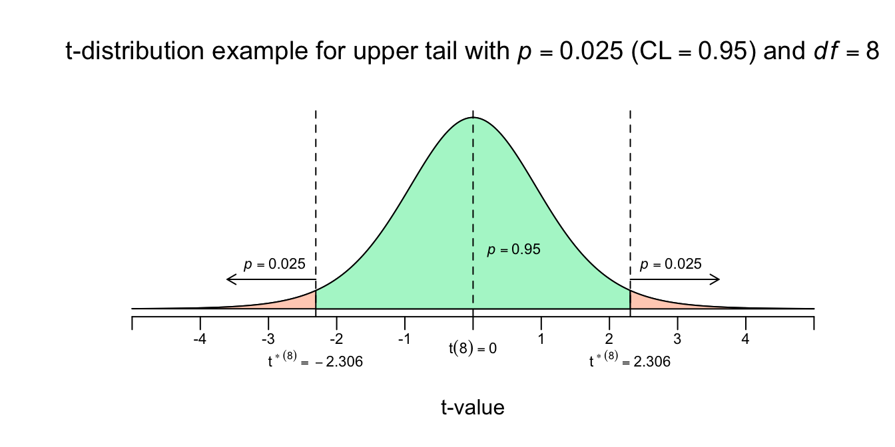
Figuur 4.13: -
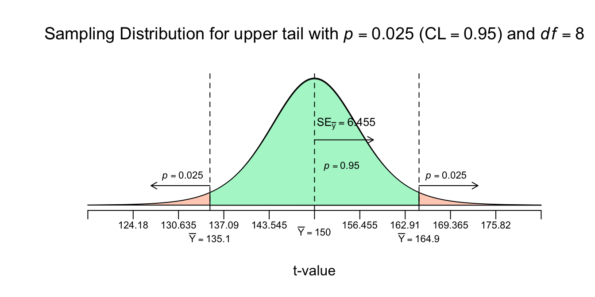
Besef dat de grootte van de margin of error altijd de helft van de breedte van het betrouwbaarheidsinterval. Bij ons loopt het interval van \(135.11\) tot en met \(164.89\). De breedte is dus \(164.89 - 135.11 = 29.78\) cm, en de helft is \(29.78/2 = 14.89\) cm en dat is dus hetzelfde als:
margin of error, \(m\): \(\:\:\:m = t_{df = n-1}^{*} \cdot \frac{S_y}{\sqrt{n}} = t^{*} \cdot SE_{\bar{y}} = 2.306 \cdot 6.455 = 14.89\);
We kunnen voor allerlei gebeurtenissen of parameters betrouwbaarheidsintervallen berekenen en je zult ze ook veel tegenkomen in al die artikelen die je voor je studie zult moeten lezen (of uit interesse natuurlijk). Dus betrouwbaarheidsintervallen voor correlatie (\(\rho_{xy}\)), regressiegewichten (\(\beta_0\), \(\beta_1\)), standaardafwijking (\(\sigma_x\)), echt, anything dus. We hebben nu telkens gekeken naar de onderzoeksvraag: Wat is het populatiegemiddelde? Als beste gok (puntschatting) hiervoor gebruik je telkens, je steekproefgemiddelde, en die staat dan ook in het midden van de verdeling, juist omdat dat je verwachting én je beste antwoord als puntschatting is. Maar wat als je een andere onderzoeks vraag hebt, die niet vraagt naar een getal, maar een onderzoeksvraag die je met een ‘ja’ of een ‘nee’ beantwoorden? Als je vraag is: “Klopt het dat studenten gemiddeld slimmer zijn dan het gemiddelde van Nederland?”, dan ben je een een idee, theorie, uitspraak, of stelling aan het checken, en daar geef je geen getal als antwoord, maar meer iets in de trend van: “Ja, klopt waarschijnlijk” of “Nee, dat is erg onwaarschijnlijk” Op naar het toetsen van hypotheses.
Toetsing van een idee aan de hand van een stelsel van Hypotheses.
Ik woon in een vrij lange straat, en aan het uiteinde van de straat, voor mij helemaal aan de andere kant, zat vroeger een bakker. Misschien nog steeds wel, maar ik kom nooit aan die kant van de straat. Laten we even onderzoeken of die winkel nog steeds een bakker is. Ik ben gek op spelletjes, dus we pakken het even ietwat vreemd aan, ons onderzoekje dus. Ik neem je mee naar die winkel, blinddoek je zodat je niet meer kan zien, je reukvermogen was je toch al kwijt vanwege corona, dus ruiken kun je ook niet. Ik stuur je naar binnen en het énige dat je mag zeggen tegen de winkelier is “Goedemiddag Meneer of Mevrouw, doet u maar wat!”. Wat zou jij verwachten dat je krijgt als de bakker nóg steeds de bakker is? Als je een koekje zou krijgen, zou dat vreemd zijn? Natuurlijk onder het idee dat “de Bakker nog steeds de bakker is” verwacht je vooral brood te krijgen, croissantje, maar koekje ook goed toch bij een bakker, een koekje is niet heel extreem raar toch? Maar stel je krijgt een fiets, ja, een fiets ja. Kan dat niet onder hetzelfde idee, krijg je nooit een fiets bij de bakker? Volgens mij krijg je als miljoenste klant altijd een super mooi kado, bijvoorbeeld een fiets, of een vakantie ofzo. Zelfs als de bakker nog steeds de bakker is, zou je dus, in heel uitzonderlijke situaties, toch best nog wel een fiets kunnen krijgen, maar het is natuurlijk wel heel extreem en heel raar. Een fiets ligt totaal niet binnen de reguliere verwachting. Anders gezegd: Als je een fiets, of iets extremers, zoals een auto of een vliegtuig zou krijgen, zou je een beetje schrikken (verbaasd zijn), waarom schrikken? Omdat je allang een idee had over bakkers en hoe zij zich gedragen en een fiets hoort toch echt bij een ander idee, namelijk meer zoiets als: “De winkel is nu fietsenmaker geworden, of in ieder geval een andere winkel geworden dan een bakker”. Maar mee eens? Dat als je een fiets zou krijgen dat je misschien wel gaat twijfelen aan je eerste idee en concludeer (beslis) je na het krijgen van een fiets of iets extremers dat de winkel is veranderd? Ik hoop het wel. Waarom het nu gaat is dat je , door je ideeën, een verwachting hebt over hoe de werklijkheid (winkel of populatie) eruit ziet. en door te zeggen “Doet u maar wat” neem je dus een steekproef uit die werkelijkheid en kun je checken of je idee waarschijnlijk is of niet. Door extreme en dus onverwachte gebeurtenissen, veranderen mensen nou eenmaal van hun idee, van “iets is hetzelfde”, naar “iets is veranderd”! Het eerste idee is wel een beetje onwaarschijnlijk en onhoudbaar (dus verwerpelijk) als je een fiets krijgt!
Sommige extreme gebeurtenissen verwacht je op grond van jou ideeën (modellen) - simpelweg- niet. Sommige extreme gebeurtenissen treden soms – of toevallig – toch op. Wanneer zou jij je ideeën aanpassen? In paragraaf 4.3 en 4.4 hebben we gekeken naar de meest basale onderzoeksvraag mogelijk. ‘Waar ligt iets, wat is de waarde van iets?’. In ons geval ging het om de waarde van een populatie gemiddelde (\(\mu_y\)) waarbij we in vorm van een betrouwbaarheidsinterval een antwoord gaven. Ik hoop dat je beseft dat je voor deze vraagstelling, geen enkel idee (verwachting, theorie of norm) over de populatie hoeft te hebben, omdat dit soort vraagstellingen heel open zijn, kun je ze dus ook vrij eenvoudig beantwoorden (aan de hand van een betrouwbaarheidsinterval). Op een open vraag (“Wat is?”) zijn heel veel mogelijke antwoorden te geven. Bij een gesloten vraag (“Is de bakker nog steeds de bakker?”) hoort een ‘Ja’ of een ‘nee’ als antwoord. Veel vaker zit er een vergelijking in een onderzoeksvraag en dan heb je dus eigenlijk met een gesloten vraag te mmaken.
Terug naar onze aapjes. Misschien is het wel bekend (of aangenomen) dat aapjes van vroeger (zeg \(50\) jaar geleden) een gemiddelde lengte van \(135\) cm hadden. En dat een overschot aan verdwaalde groeihormonen of andere gekkigheid (vanwege de bio-industrie) in het oerwoud, misschien wel heeft geleid tot een verandering of verschuiving van het gemiddelde en dat ze dus, gemiddeld gezien, groter zijn geworden. Of misschien vermoed je juist wel dat - door schaarste in de rimboe – ze juist kleiner zijn geworden (gemiddeld gezien). Bij dit soort vraagstellingen heb je dus wel degelijk een idee of vermoeden over hoe de werkelijkheid (populatie) eruit ziet, en wil je dus de huidige situatie met jou idee vergelijken, zodat je achteraf een uitspraak kunt doen of jou vermoeden (van verandering of verschil) klopt of niet, met de werkelijkheid waarin we leven. Natuurlijk, ook dit zal weer gaan aan de hand van kans-verwachtingen en een steekproeven-verdeling.
Tweezijdige Toetsing
Goed, stel dat ik dus het idee heb, dat de gemiddelde lengte van aapjes de afgelopen jaren veranderd is (door te veel groeihormonen, schaarste of wat dan ook) en dat ik die eventuele verandering wil onderzoeken. Welke (statistische) procedures moet we dan doorlopen? We gaan een significantie-toets doen om te kijken welk idee (geen verandering versus wel verandering) het meest waarschijnlijk is. Op onze aarde en in ons universum (ik laat de ongeveer \(10^500\) andere mogelijke universa even buiten beschouwing) kan toch maar echt één van de twee ideeën, waar zijn of dus kloppen. Twee stellingen die elkaar ontkennen kunnen niet allebei waar zijn (althans, volgens de gangbare gedachte, er zijn vast uitzonderingen in de theoretische natuurkunde).
In ons geval hebben we dus de twee stellingen, hypotheses, theorieën of ideeën die elkaar tegenspreken (ontkennen):
\(H_0\): Aapjes van nu hebben hetzelfde gemiddelde qua lengte als aapjes van \(50\) jaar geleden.
\(H_1\): Aapjes van nu hebben een ander gemiddelde dan \(50\) jaar geleden.
De Nul-Hypothese (\(H_0\), of spreek uit als: ‘H-nul’) stelt altijd dat er geen verschil (tussen twee of meer dingen) of geen effect tussen twee (of meer) variabelen. De \(H_0\) stelt eigenlijk altijd dat iets _af_wezig is, In de rechtspraak zou de \(H_0\) zeggen of stellen dat de verdachte onschuldig is (schuld is dus afwezig). In het ziekenhuis stelt de \(H_0\) dat de ziekte afwezig is (dus negatief, betekent afwezig bij de medicijnen, een negatieve testuitslag is een goeie uitslag weten we inmiddels)
De Alternatieve Hypothese (\(H_1\) of \(H_a\)) De Alternative Hypothesis, (of zeg ‘H-één’ of ‘H-A’) zegt altijd dat er wel een verschil is tussen twee dingen of wel een effect tussen twee (of meer) variabelen is. Hypotheses die we opstellen, doen altijd een uitspraak over populatiegegevens en dus nooit over steekproef-gegevens (daar hoef je immers niet aan te twijfelen, dat heb je al berekend)
| Vakgebied | Nul-Hypothese (\(H_0\)) | Alternatieve-Hypothese (\(H_1\)) |
|---|---|---|
| Statistiek | Geen verschil, verschil is afwezig, verschil is nul, geen effect, effect is afwezig, effect is nul | Wel verschil, verschil is aanwezig, verschil is niet nul, wel effect, effect is aanwezig, effect is niet nul |
| Medicijnen | Niet ziek, ziekte is afwezig, negatief | Wel ziek, ziekte is aanwezig, positief |
| Rechtspraak | Onschuldig, schuld is afwezig | Schuldig, schuld is aanwezig |
We kunnen de nul-hypothese ook iets technischer (of wiskundiger) formuleren. We gaan er nu even vanuit dat de populatie aapjes van \(50\) jaar geleden, een gemiddelde lengte van \(135\) cm heeft.
\(H_0\): \(\:\mu_{\text{aapjes tegenwoordig}} = \mu_{\text{aapjes 50 jaar geleden}}\)
\(H_0\): \(\:\mu_{\text{aapjes tegenwoordig}} = 135 (=\mu_0)\)
‘\(\mu_0\)’ staat voor de verwachting voor het gemiddelde (\(135\) hier) dat waar zou zijn volgens de \(H_0\). Of kortweg:
\(H_0\): \(\:\mu_{\text{aapjes tegenwoordig}} =\mu_0\)
of uiteindelijk het meest praktisch in gebruik:
\(H_0\): \(\:\mu_{\text{aapjes tegenwoordig}} - \mu_{\text{aapjes 50 jaar geleden}} = 0\) of nog korter:
\(H_0\): \(\:\mu_{\text{verschil in gemiddelden}} = 0,\:\) Of in het Engels;
\(H_0\) : \(\mu_{\text{mean difference}} = 0\)
Als twee dingen (gemiddelden) dezelfde waarde hebben, dan is het verschil natuurlijk nul. Voor de alternatieve hypothese hoef je alleen maar het is-gelijk-teken (\(=\)) te veranderen in een on-gelijk-teken \((\ne)\):
\(H_1\): \(\:\mu_{\text{aapjes tegenwoordig}} \ne 135\)
\(H_1\): \(\:\mu_{\text{aapjes tegenwoordig}} \ne \mu_0\)
\(H_1\): \(\:\mu_{\text{aapjes tegenwoordig}} - \mu_{\text{aapjes 50 jaar geleden}} \ne 0, \:\) of nog korter:
\(H_1\): \(\:\mu_{\text{verschil in gemiddelden}} \ne 0\)
\(H_1\): \(\:\mu_{\text{mean difference}} \ne 0\)
Het verschil in gemiddelden wijkt af van nul, aangezien de waarde van een verschil bij ons onder óf boven nul kan zijn, noemen we dit een tweezijdige alternatieve hypothese. Onze onderzoeksvraag is of aapjes van tegenwoordig gemiddeld gezien anders zijn dan aapjes vroeger. Eigenlijk is je onderzoeksvraag gesteld in termen van de \(H_1\), maar dan gewoon met een vraagteken. En als je ‘anders’ zegt dan laat je in het midden of ze tegenwoordig juist groter of juist kleiner zijn.
Als we zouden onderzoeken of aapjes tegenwoordig groter zijn, dan hebben we te maken met een éénzijdige alternatieve hypothese (en dus ook toetsing, maar dat voor straks). Het stelsel van hypothese zou er dan bijvoorbeeld zo uit zien:
\(H_0\): \(\:\mu_{\text{aapjes tegenwoordig}} = \mu_{\text{aapjes 50 jaar geleden}}\)
\(H_1\): \(\:\mu_{\text{aapjes tegenwoordig}} > \mu_{\text{aapjes 50 jaar geleden}}\)
Of:
\(H_0\): \(\:\mu_{\text{aapjes tegenwoordig}} - \mu_{\text{aapjes 50 jaar geleden}} = 0\)
\(H_1\): \(\:\mu_{\text{aapjes tegenwoordig}} - \mu_{\text{aapjes 50 jaar geleden}} > 0\)
Maar dus niet (vanwege volgorde van aftrekking):
\(H_0\): \(\:\mu_{\text{aapjes tegenwoordig}} - \mu_{\text{aapjes 50 jaar geleden}} = 0\)
\(H_1\): \(\:\mu_{\text{aapjes tegenwoordig}} - \mu_{\text{aapjes 50 jaar geleden}} < 0\)
Maar weer wel (vanwege volgorde van aftrekking):
\(H_0\): \(\:\mu_{\text{aapjes tegenwoordig}} - \mu_{\text{aapjes 50 jaar geleden}} = 0\)
\(H_1\): \(\: \mu_{\text{aapjes 50 jaar geleden}} - \mu_{\text{aapjes tegenwoordig}} < 0\)
Eén of Twee-zijdig maakt, maakt voor nu, nog even niet uit, ik ga daar nog uitgebreid op in, maar voor nu: Denk in verschil, de \(D\) for difference! Natuurlijk kan ik zeggen dat mijn ouders even lang zijn, maar beter zeg je gewoon (wiskundig) dat het verschil in lengte, nul is. Misschien is dat hier een beetje vreemd, maar als er tussen twee dingen wel een verschil is (mijn mama heeft een lengte van \(173.43\) cm en mijn papa is \(163.56\) cm) dan willen we veel liever weten hoe groot dat verschil is (\(173.43-163.56 = 9.87\)). Aan het verschil van \(9.87\) cm kunnen we makkelijker zien hoe heftig (belangrijk) dat verschil is, en waarom zou je de lezer niet verwennen met één handeling minder, door vast even het verschil voor ze te berekenen? Als ik trouwens alleen zou zeggen dat het verschil in lengte tussen mijn ouders \(9.87\) cm is, zou je dan ook weten wie langer is? Dat hangt natuurlijk van de volgorde van aftrekking af, doe je ‘Pa - Ma’ of ‘Ma - Pa’. Beter zou misschien zijn als ik gewoon meteen zou zeggen dat mijn moeder \(9.87\) cm langer is dan mijn vader, dan weet iedereen hoe de vork in de steel zit. Ook voor de toetsings-procedure voor een stelsel van hypotheses, die we zo gaan uitvoeren, denk je vaak in verschil en niet in twee losse waarden die hetzelfde zijn of niet! Dus voor alle duidelijkheid: onder (waarheid van) \(H_0\) verwachten we dus dat het verschil in gemiddelden tussen de twee populaties (vroeger en nu) \(0\) is. Omdat we (statistici en de meeste studenten) lui zijn, formuleren we het stelsel van hypotheses dan ook vaak als volgt:
\(H_0\): \(\:D = 0\)
\(H_1\): \(\:D \ne 0\)
\(D\) natuurlijk voor Difference, in ons geval dus het verschil in gemiddelden. Het gokspelletje komt ook hier van pas, dus laten we daar maar mee beginnen. Stel dat de \(H_0\) waar is en aapjes van nu, gemiddeld dezelfde lengte hebben als aapjes van vroeger. Stel dat we nog geen steekproef zouden hebben genomen, dus ook niet de enige echte, en we dat nu pas gaan doen. Wat is in dit geval jouw verwachting voor het nieuwe steekproef-gemiddelde? We voorspellen dus weer een statistiek (en dus niet een individueel data-puntje), maar nu onder de voorwaarde of verwachting dat de nulhypothese waar is! Nou, wat zou je gokken? Ik hoop dat je zegt: Het steekproefgemiddelde zal wel ‘\(\overline{Y} = 135\) cm’ zijn, want dat was vroeger ook zo en als aapjes niet veranderd zijn, zou je datzelfde getal (gemiddelde) weer moeten vinden. Nou vooruit, iets rond de \(135\) dan, waarschijnlijk dus niet precies \(135\) (lang leve steekproef-fluctuatie!). We kunnen natuurlijk de steekproeven-verdeling van het gemiddelde onder aanname dat de \(H_0\) waar zou zijn, tekenen. En wel met de zelfde standard error die we eerder tegen zijn gekomen (\(SE_{\bar{y}}\), gebaseerd op \(S_y\) en \(n\)). Ook hier maken we weer gebruik van de \(t\)-verdeling en wederom voor \(8\) vrijheidsgraden. Eerst nog even onze gegevens op een rijtje:
Onze onderzoeksvraag: Is het populatiegemiddelde voor de lengte van aapjes tegenwoordig anders dan \(50\) jaar geleden? Aapjes van \(50\) jaar geleden hebben een gemiddelde van \(\mu = 135\). Hiebij horen dus het stelsel van Hypotheses:
- \(H_0\): \(\:\mu_{\text{aapjes tegenwoordig}} = 135 (=\mu_0)\)
- \(H_1\): \(\:\mu_{\text{aapjes tegenwoordig}} \ne 135\)
We hebben een steekproef getrokken van \(n=9\)
Met de statistieken \(\overline{Y} = 150\), de standaardafwijking: \(S_y = 19.365\)
We nemen (jammer genoeg) alleen aan dat de populatie (van tegenwoordig) normaal verdeeld is, dus: \(Y \: \mathtt{\sim} \: N(\mu_{y} = ?; \sigma_y = ?)\)
omdat sigma (\(\sigma_y\)) onbekend is, hebben we te maken met de \(t\)-verdeling voor \(df = n-1 = 9-1 = 8\) vrijheidsgraden.
Ik laat eerst de steekproevenverdeling zien onder aanname dat de \(H_0\) waar zou zijn:
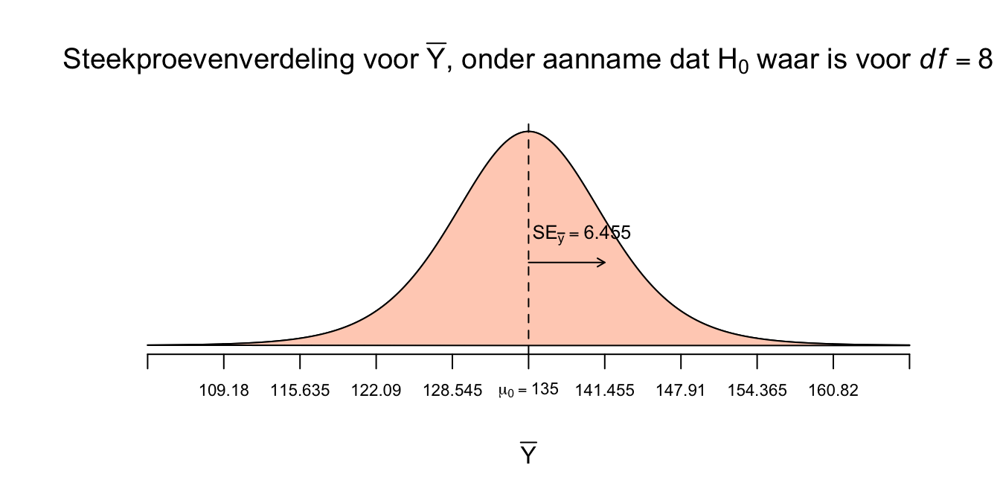
Figuur 4.14: -
Natuurlijk gebeurt het heus wel eens dat je steekproef echt niet op je populatie lijkt (niet representatief is) en dat je heel iets anders vindt dan dat je verwacht, ook al is de \(H_0\) waar. Maar gelukkig niet vaak, er zijn nou eenmaal meer steekproeven die wel representatief zijn (lijken op het ware gemiddelde). Denk maar weer aan de grabbel-ton waarvan we weten dat het gemiddelde \(135\) cm is voor die populatie aapjes in die ‘nul-hypothese-ton’. Als de \(H_0\) echt waar zou zijn, dan zou je natuurlijk iets rond de \(135\) verwachten als je een steekproef trekt van \(9\) aapjes en het gemiddelde \(\overline{Y}\) uitrekent en daarom staat die waarde (\(\mu_0 = 135\)) ook in het midden van je steekproevenverdeling. Sterker nog, we toetsen altijd de \(H_0\) (en dus niet \(H_1\)). We kijken of \(H_0\) houdbaar is of niet. Maar ook al is de \(H_0\) waar en verwacht je dus \(135\) voor een steekproefgemiddelde (dit is dus brood), soms krijg je een koekje of iets extremers, lang leve steekproeffluctuatie! De vraag is eigenlijk of onze enige echte steekproef, met \(\overline{Y} = 150\), nou een koekje is of een fiets? Het wijkt sowieso af van \(\mu_0 = 135\) (wel \(15\) punten) en is daarmee sowieso geen brood. Omdat we nu de steekproevenverdeling hebben (nog steeds onder aanname dat \(H_0\) dus waar zou zijn) kunnen we dus weer allerlei kansvragen oplossen. Bijvoorbeeld wat de kans zou zijn dat we een gemiddelde van \(\overline{Y}=180\) of hoger hebben:
\(P(\overline{Y} \geq 180 | H_0 \: \text{waar})\)
Dus de kans op een steekproefgemiddelde van \(180\) of meer, gegeven dat (onder voorwaarde dat) de \(H_0\) waar is. Wij willen natuurlijk weten wat de rechter overschrijdingskans is op \(\overline{Y}=150\), ons enige echte steekproefgemiddelde!
\(P(\overline{Y} \geq 150 | H_0 \: \text{waar})=\:?\)
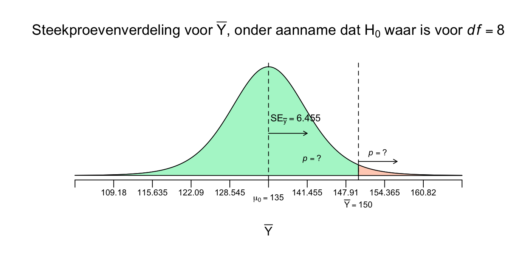
Figuur 4.15: -
We willen dus aan de hand van deze verdeling, kans-uitspraken doen over een range van mogelijke waarden voor het steekproef-gemiddelde die kunnen optreden, gegeven dat de nulhypothese waar is (behoorlijk hypothetisch dus). Maar dit is nog steeds een ongestandaardieseerde verdeling en daar hebben we geen kanstabel voor! Dus eerst gaan we het steekproefgemiddelde (\(\overline{Y}\)) standaardiseren. We willen dus weten hoeveel standaard errors (denk nog steeds lineaaltje) het enige echte steekproefgemiddelde (\(\overline{Y} = 150\)) van de \(H_0\) verwachting, dus \(\mu_{0} = 135\). Je ziet in de verdeling hierboven dat \(\overline{Y} = 150\) iets meer dan \(2\) standaard errors naar rechts van het midden zit. En we noemen die gestandaardiseerde score dus een \(t\)-waarde. Of ook wel de toetsstatistiek \(t\) en in ons geval, nog steeds voor \(df = 8\).
\(t(df)=\frac{\overline{Y} - \mu_{0}}{SE_{\bar{y}}}\), met \(df = n-1\).
of met beginwaarden:
\(t(df) =\frac{\overline{Y} - \mu_{0}}{S_y/\sqrt{n}}\)
\(t(8) = \frac{150 - 135}{6.455}=(150-135)/6.455 = 2.324\), \(df = 9-1 = 8\)
\(t(8) = 2.324\)
De \(t\)-waarde, voor \(8\) vrijheidsgraden, heeft voor onze toets een waarde van \(2.324\) Nu kunnen we ook \(p\)-waarde opzoeken, alleen gaat dat iets lastiger dan bij de \(z\)-tabel. Eerst maar even de gestandaardiseerde \(t\)-verdeling, voor \(df=8\), met onze toetsstatistiek in een plaatje:
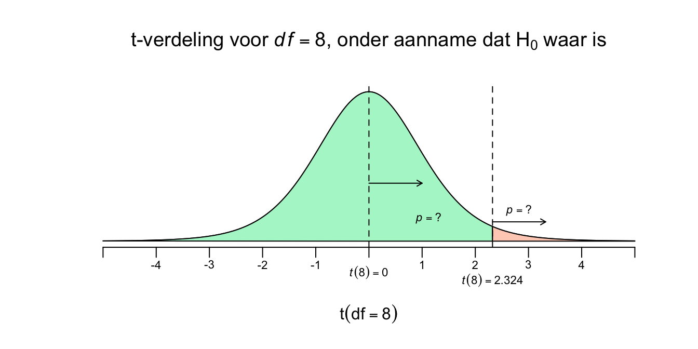
Figuur 4.16: -
Nu kunnen we dus een \(p\)-waarde opzoeken in de \(t\)-tabel. Als je hieronder in de \(t\)-tabel bij de rij voor \(df = 8\) kijkt, zie je alleen de \(t\)-waarden staan die horen bij de gegeven rechterstaarten (upper tail propability, voor \(p = .25\) tot en met \(p = .0005\)). De eerste, en kleinste, \(t\)-waarde die de tabel geeft, is \(t(8) = 0.706\) en hoort juist bij de grootste staart (\(p = .25\)). Niet extreem is makkelijk te overschrijden, toch? Onze \(t\)-waarde (\(t(8) = 2.324\)) is extremer dan \(t(8) = 0.706\) en moet dus een kleinere staart (\(p\)-waarde) hebben. Soms is je \(t\)-waarde heel extreem, zelfs extremer dan de extreemste waarde uit de tabel (\(t(8) = 4.501\)), dan is jouw staart dus ook kleiner dan \(p = .0005\). Onze \(t\)-waarde (\(t(8) = 2.324\)) ligt tussen \(t(8) = 2.306\) en \(t(8) = 2.449\). Dus onze \(p\)-waarde moet dus tussen de \(p = .025\) en \(p = .02\) liggen… of? Natuurlijk niet, mijn moeder is ook niet tussen de \(180\) en de \(170\) cm, maar gewoon tussen de \(170\) en de \(180\), we noemen eerst het laagste getal en dan het grootste! Dus onze \(p\) ligt dus tussen de \(p=.02\) en de \(p=.025\). We zeggen dan ook wel, ‘\(.02 < p <.025\)’ of je zegt alleen \(p < .025\), wat je vooral in artikelen tegenkomt, het eerste is een beetje schools.
| df | .25 | .20 | .15 | .10 | .05 | .025 | .02 | .01 | 0.005 | .0025 | .001 | .0005 |
|---|---|---|---|---|---|---|---|---|---|---|---|---|
| 1 | 1.000 | 1.376 | 1.963 | 3.078 | 6.314 | 12.706 | 15.895 | 31.821 | 63.657 | 127.321 | 318.309 | 318.309 |
| 2 | 0.816 | 1.061 | 1.386 | 1.886 | 2.920 | 4.303 | 4.849 | 6.965 | 9.925 | 14.089 | 22.327 | 22.327 |
| 3 | 0.765 | 0.978 | 1.250 | 1.638 | 2.353 | 3.182 | 3.482 | 4.541 | 5.841 | 7.453 | 10.215 | 10.215 |
| 4 | 0.741 | 0.941 | 1.190 | 1.533 | 2.132 | 2.776 | 2.999 | 3.747 | 4.604 | 5.598 | 7.173 | 7.173 |
| 5 | 0.727 | 0.920 | 1.156 | 1.476 | 2.015 | 2.571 | 2.757 | 3.365 | 4.032 | 4.773 | 5.893 | 5.893 |
| 6 | 0.718 | 0.906 | 1.134 | 1.440 | 1.943 | 2.447 | 2.612 | 3.143 | 3.707 | 4.317 | 5.208 | 5.208 |
| 7 | 0.711 | 0.896 | 1.119 | 1.415 | 1.895 | 2.365 | 2.517 | 2.998 | 3.499 | 4.029 | 4.785 | 4.785 |
| 8 | 0.706 | 0.889 | 1.108 | 1.397 | 1.860 | 2.306 | 2.449 | 2.896 | 3.355 | 3.833 | 4.501 | 4.501 |
| 9 | 0.703 | 0.883 | 1.100 | 1.383 | 1.833 | 2.262 | 2.398 | 2.821 | 3.250 | 3.690 | 4.297 | 4.297 |
| 10 | 0.700 | 0.879 | 1.093 | 1.372 | 1.812 | 2.228 | 2.359 | 2.764 | 3.169 | 3.581 | 4.144 | 4.144 |
| 11 | 0.697 | 0.876 | 1.088 | 1.363 | 1.796 | 2.201 | 2.328 | 2.718 | 3.106 | 3.497 | 4.025 | 4.025 |
| 12 | 0.695 | 0.873 | 1.083 | 1.356 | 1.782 | 2.179 | 2.303 | 2.681 | 3.055 | 3.428 | 3.930 | 3.930 |
| 13 | 0.694 | 0.870 | 1.079 | 1.350 | 1.771 | 2.160 | 2.282 | 2.650 | 3.012 | 3.372 | 3.852 | 3.852 |
| 14 | 0.692 | 0.868 | 1.076 | 1.345 | 1.761 | 2.145 | 2.264 | 2.624 | 2.977 | 3.326 | 3.787 | 3.787 |
| 15 | 0.691 | 0.866 | 1.074 | 1.341 | 1.753 | 2.131 | 2.249 | 2.602 | 2.947 | 3.286 | 3.733 | 3.733 |
| 16 | 0.690 | 0.865 | 1.071 | 1.337 | 1.746 | 2.120 | 2.235 | 2.583 | 2.921 | 3.252 | 3.686 | 3.686 |
| 17 | 0.689 | 0.863 | 1.069 | 1.333 | 1.740 | 2.110 | 2.224 | 2.567 | 2.898 | 3.222 | 3.646 | 3.646 |
| 18 | 0.688 | 0.862 | 1.067 | 1.330 | 1.734 | 2.101 | 2.214 | 2.552 | 2.878 | 3.197 | 3.610 | 3.610 |
| 19 | 0.688 | 0.861 | 1.066 | 1.328 | 1.729 | 2.093 | 2.205 | 2.539 | 2.861 | 3.174 | 3.579 | 3.579 |
| 20 | 0.687 | 0.860 | 1.064 | 1.325 | 1.725 | 2.086 | 2.197 | 2.528 | 2.845 | 3.153 | 3.552 | 3.552 |
| 21 | 0.686 | 0.859 | 1.063 | 1.323 | 1.721 | 2.080 | 2.189 | 2.518 | 2.831 | 3.135 | 3.527 | 3.527 |
| 22 | 0.686 | 0.858 | 1.061 | 1.321 | 1.717 | 2.074 | 2.183 | 2.508 | 2.819 | 3.119 | 3.505 | 3.505 |
| 23 | 0.685 | 0.858 | 1.060 | 1.319 | 1.714 | 2.069 | 2.177 | 2.500 | 2.807 | 3.104 | 3.485 | 3.485 |
| 24 | 0.685 | 0.857 | 1.059 | 1.318 | 1.711 | 2.064 | 2.172 | 2.492 | 2.797 | 3.091 | 3.467 | 3.467 |
| 25 | 0.684 | 0.856 | 1.058 | 1.316 | 1.708 | 2.060 | 2.167 | 2.485 | 2.787 | 3.078 | 3.450 | 3.450 |
| 26 | 0.684 | 0.856 | 1.058 | 1.315 | 1.706 | 2.056 | 2.162 | 2.479 | 2.779 | 3.067 | 3.435 | 3.435 |
| 27 | 0.684 | 0.855 | 1.057 | 1.314 | 1.703 | 2.052 | 2.158 | 2.473 | 2.771 | 3.057 | 3.421 | 3.421 |
| 28 | 0.683 | 0.855 | 1.056 | 1.313 | 1.701 | 2.048 | 2.154 | 2.467 | 2.763 | 3.047 | 3.408 | 3.408 |
| 29 | 0.683 | 0.854 | 1.055 | 1.311 | 1.699 | 2.045 | 2.150 | 2.462 | 2.756 | 3.038 | 3.396 | 3.396 |
| 30 | 0.683 | 0.854 | 1.055 | 1.310 | 1.697 | 2.042 | 2.147 | 2.457 | 2.750 | 3.030 | 3.385 | 3.385 |
| 40 | 0.681 | 0.851 | 1.050 | 1.303 | 1.684 | 2.021 | 2.123 | 2.423 | 2.704 | 2.971 | 3.307 | 3.307 |
| 50 | 0.679 | 0.849 | 1.047 | 1.299 | 1.676 | 2.009 | 2.109 | 2.403 | 2.678 | 2.937 | 3.261 | 3.261 |
| 60 | 0.679 | 0.848 | 1.045 | 1.296 | 1.671 | 2.000 | 2.099 | 2.390 | 2.660 | 2.915 | 3.232 | 3.232 |
| 80 | 0.678 | 0.846 | 1.043 | 1.292 | 1.664 | 1.990 | 2.088 | 2.374 | 2.639 | 2.887 | 3.195 | 3.195 |
| 100 | 0.677 | 0.845 | 1.042 | 1.290 | 1.660 | 1.984 | 2.081 | 2.364 | 2.626 | 2.871 | 3.174 | 3.174 |
| 1000 | 0.675 | 0.842 | 1.037 | 1.282 | 1.646 | 1.962 | 2.056 | 2.330 | 2.581 | 2.813 | 3.098 | 3.098 |
| \(z^{*}\) | 0.674 | 0.842 | 1.036 | 1.282 | 1.645 | 1.960 | 2.054 | 2.326 | 2.576 | 2.807 | 3.090 | 3.291 |
Nu kunnen we dus ons plaatje bijna afmaken en de \(p\)-waarde erbij zetten, nu nog, alleen met de rechteroverschrijdingskans. Voor een twee-zijdige toetsing, heb je namelijk twee staarten nodig! Ik ben, niet voor niets, knettergek op Pipi Langkous!

Figuur 4.17: -
Figuur 4.18: -
Dus tot zover weten we wat de kans om een steekproefgemiddelde (voor \(n=9\)) groter (rechts van) of gelijk aan ons enige echte steekproefgemiddelde (\(\overline{Y}=150\)), gegeven dat de populatie aapjes in het echt gewoon een gemiddelde van \(\mu_{0}=135\), ligt ergens tussen de \(2\) en \(2.5\) procent. Anders gezegd: als je dus duizend steekproeven zou nemen uit deze nul-hypothese-grabbelton, dan zal zelfs minder dan slechts \(25\) steekproeven (\(2.5\) procent) een gemiddelde hebben van \(150\) cm of meer! En dat ligt niet echt in de verwachting. Ja het gebeurt wel, al is de \(H_0\) dus waar, maar zeker niet vaak. Ja, als de \(H_1\) waar zou zijn, dus het gemiddelde van de populatie van tegenwoordig is echt hoger ligt dan \(\mu_0 = 135\), dus: \(\mu_1\) of \(\mu_a > 135\), dan zou je natuurlijk (veel) vaker dan \(25\) keer een een gemiddelde hoger of gelijk aan \(150\) cm vinden, dan valt het wel binnen jouw verwachting, toch?. Maar goed:
\(.020 < P(\overline{Y} ≥ 150 \: | \: \mu_0 = 135) < .025\)
en dat, die \(p\)-waarde, is best laag. Misschien nog geen fiets, maar wat mij betreft wel een step (en niet één van marsepein). Het, die \(p\)-waarde, is ook een stap, ééntje in de goede richting, namelijk ons éénzijdig toetsings-resultaat:
\(t(8) = 2.32\), \(.020 < p <.025\), (éénzijdig).
Die \(p\)-waarde, daarvan willen we eigenlijk de precieze waarde van weten (in twee of drie decimalen na de komma, of puntje bij ons en in APA), maar dat gaan we met JASP doen, die berekent de boel natuurlijk zo precies als we maar willen. Omdat wij een twéézijdige alternatieve hypothese hebben (\(H_1\): \(\:\mu_{\text{aapjes tegenwoordig}} \ne 135\)), willen we ook weten wat de kans is dat ons steekproefgemiddelde net zover weg (of extremer) zit als ons gemiddelde (\(\overline{Y}=150\)), maar dan aan de andere (linker) kant van \(\mu_0 = 135\). Ons gemiddelde zit nu \(15\) punten boven de \(H_0\) verwachting (\(\overline{Y} - \mu_0 = 150 - 135 = 15\)). Dus als je \(15\) punten (of meer) daaronder zit. Als we altijd het \(\overline{Y} - \mu_0\) doen, dus in deze volgorde en jou dus bijvoorbeeld een steekproefgemiddelde van \(\overline{Y} = 110\) hebben, dan zou het verschil dus \(\overline{Y} - \mu_0 = 110 - 135 = \text{-}25\) zijn. Maar absoluut gezien zou het verschil gewoon \(25\) punten zijn: \(|\overline{Y} - \mu_0| = |110 - 135| = |\text{-}25| = 25\) Dus als we een tweezijdig toetsingresultaat of \(p\)-waarde willen hebben, dan willen we dus weten wat de kans is dat \(\overline{Y}\) net zover - naar links of naar rechts - of verder van het midden vandaan zit dan ons enige echte steekproef gemiddelde (\(\overline{Y} = 150\)). Dankzij symmetrie is die kans natuurlijk hetzelfde, de kans is net zo groot om er 15 punten of meer onder te zitten dus ook Formeel wordt dat: \(P(| \overline{Y} - \mu_0 | \geq 15)\), nog steeds onder voorwaarde natuurlijk dat de \(H_0\) waar zou zijn. In een plaatje wordt dat (ik vermeld meteen de \(p\)-waarden):
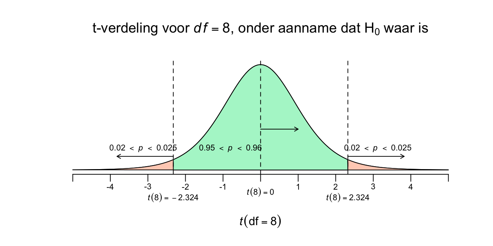
Figuur 4.19: -
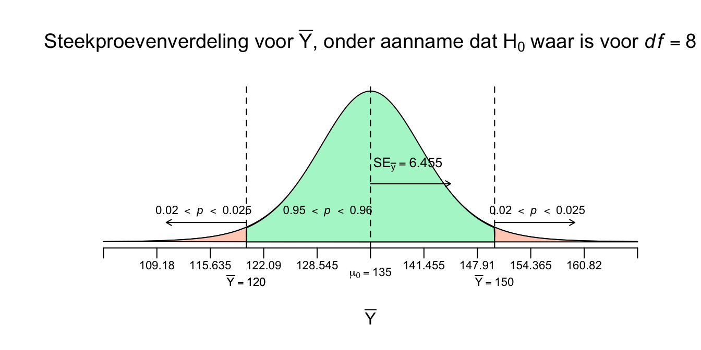
Figuur 4.20: -
Dit geeft dus de kans dat de \(t\)-waarde of kleiner gelijk \(\text{-}2.324\) is of juist groter is dan \(2.324\). Als de oppervlakte van één staartje tussen de \(2\) en \(2.5\) procent is, dan hebben ze samen (dus opgeteld of keer twee, omdat ze hetezlfde zijn) een opervlakte tussen de \(4\) en \(5\) procent en ligt onze uiteindelijke twéézijdige \(p\)-waarde daar dus ook, ofwel: \(.04 < p < .05\). Dus als je een steekproef trek en de \(H_0\) is waar, dan is de kans tussen de \(4\) en \(5\) procent dat je \(15\) punten of meer van de \(\mu_0\) vandaan zit. Dus iets minder dan \(5\) procent kans op ons - of een extremer - resultaat. Tot zover dus hebben we dus:
+ $H_0$: $\:\mu_{\text{aapjes tegenwoordig}} = 135 (=\mu_0)$
+ $H_1$: $\:\mu_{\text{aapjes tegenwoordig}} \ne 135$- We nemen alleen aan dat de populatie (van tegenwoordig) normaal verdeeld is, dus: \(Y \: \mathtt{\sim} \: N(\mu_{y} = ?; \sigma_y = ?)\)
- We hebben de statistieken van onze énige echte: \(n=9\), \(\overline{Y} = 150\) en \(S_y = 19.365\)
- Omdat sigma (\(\sigma_y\)) onbekend is, hebben we te maken met de \(t\)-verdeling voor \(df = n-1 = 9-1 = 8\) vrijheidsgraden.
- Met asl toetsingsresultaat:
- \(t(8) = 2.32\), \(.040 < p <.050\), (tweezijdig, two tailed).
Al met al kunnen we zeggen dat de kans dus iets kleiner is dan \(5\) procent dat je een extremer steekproefgemiddelde zult vinden dat \(15\) cm of meer afwijkt van \(\mu_0 = 135\). Maar wat moet je met die kans van tussen de \(4\) of \(5\) procent? Een beslissing maken natuurlijk! En dan maar hopen dat je beslissing over die vermeende werkelijkheid overeenkomt met de echte werkelijkheid.
Type I en II Fouten
De conclusie, in de vorm van een beslissing, is natuurlijk het belangrijkst. Wij willen een conclusie of antwoord op onze onderzoekvraag (“Is er verschil?”) in termen van: “Ja, er is verschil” of: “Nee, er is geen verschil”. Maar die beslissing of keuze tussen deze twee uitspraken, hangt ervan af hoe streng ik - of jij - bent, of beter: hoe conservatief je bent, dus hoe behoudend je bent en dus de boel graag gewoon de boel wilt laten en je dus de \(H_0\) ook niet zomaar gaat verwerpen, omdat je niet graag je ideeën wilt aanpassen. Als je heel behoudend bent als rechter in de rechtspraak, dan ben je eigenlijk heel bang om iemand onterecht in de gevangenis te gooien. Wat gebruikt een rechter om te beslissen over de status van de verdachte? Bewijsvoering natuurlijk, en wij natuurlijk een steekproef. De vraag is wat is genoeg bewijs tegen de vermeende onschuld? Weet de rechter, of de verdachte daadwerkelijk onschuldig is of niet? Sterker nog: niemand weet of de verdachte het - wel of niet - met absolute zekerheid, heeft gedaan. Zelfs de verdachte zelf, weet het niet altijd, je zou maar net de weg kwijt zijn geweest en een totale blackout hebben! Ja ja, er is er natuurlijk maar één die altijd weet wat de ware toestand van de verdachte is en dat is God. Lekker vaag weer dus, maar hier komt het op neer: Je weet dus nooit - met absolute zekerheid - of een beslissing terecht is geweest. Ook als iemand onschuldig is (God weet het) kan het nog steeds zo zijn dat de verdachte én niet thuis was én dat zijn DNA op wonderbaarlijke wijze op plaats-delict terecht is gekomen, terwijl die er toch echt niks mee te maken heeft gehad. Als de rechter beslist dat iemand schuldig is, terwijl iemand in het echt onschuldig is, dan maakt hij een type I fout (type I error). Een type I fout in de rechtspraak betekent dus een onterechte veroordeling voor de verdachte. Sta er gerust nog maar even bij stil, dat de gehele en alle werkelijkheid ons, in strikte zin, onbekend is, in het grote, we kunnen niet alle sterren zien, en in het kleine. Onze microscopen kunnen ook niet kleinere dingen zien dan iets wat kleiner is dan de golflengte, de afstand van top naar top bij twee golven) van licht, zo’n \(500\) nanometer, of \(0.0005\) mm, heel klein dus. Wij doen wel allemaal uitspraken, maar dat wil nog niet zeggen dat ze ook daadwerklijk waar zijn. Ja ja, de wetenschap is één grote onzekerheid, en alleen God weet hoe de vork in de steel zit. Weer lekker vaag dus.
Type I Fout:
- Beslissen (voor een populatie) dat de \(H_1\) waar is terwijl in het echt de \(H_0\) waar is
- Je verwerpt onterecht de \(H_0\)
- Je gooit iemand onterecht in de gevangenis
- Je krijgt de diagnose ‘Ziek’ terwijl niet ziek (false positive)
- Je zegt dat er verschil is maar dat is er niet.
- Je zegt dat er een effect is terwijl dat er in het echt niet is
Je hebt ook nog een type II fout (type II error), ook dit gaat om een verkeerde beslissing. In de rechtspraak betekent het een onterechte vrijspraak.
Type II Fout:
- Beslissen (voor een populatie) dat de \(H_0\) waar is terwijl in het echt de \(H_1\) waar is
- Je behoudt onterecht de \(H_0\) en je verwerpt de \(H_0\) dus niet.
- Je spreekt iemand onterecht in vrij
- Je krijgt de diagnose ‘Niet Ziek’ terwijl juist wel ziek (false negative)
- Je zegt dat er geen verschil is maar dat is er wel.
- Je zegt dat er geen effect is terwijl dat er in het echt wel is
Bij de beslissing over de \(H_0\) of de \(H_1\) (of beter: de beslissing of de \(H_0\) verworpen kan worden of niet), kijken we vooral hoe erg we het vinden om een type 1 fout te maken. Ik heb een donker en bruin vermoeden dat in de Verenigde Staten ze het minder erg vinden om iemand onterecht in de gevangenis te gooien dan in Nederland. In Nederland zijn we dus conservatiever, omdat we we wat banger zijn om iemand die onschuldig is dus onterecht te veroordelen. Wij hebben veel bewijs nodig voordat we dat zomaar doen. We houden dus lang vast aan het vermeende onschuld van iemand. Als je wilt dat minder mensen in onterecht in de gevangenis komen, wil je dus meer bewijslast (verschil) zien, maar zelfs dan komt er nog steeds wel eens een verdachte onterecht in de gevangenis, beslissingen zijn niet altijd terecht! In de statistiek, vinden we het vaak Okay om maximaal \(5\) procent type I fouten te maken, maar conservatiever zie je ook vaak, dus bijvoorbeeld slechts \(1\) procent of zelfs nog minder. De toelaatbare kans op een type I fout, dus gegeven dat de \(H_0\) waar is (anders kun je die fout niet eens maken), noemen we alpha (\(\alpha\)) of ook wel het ‘significantie niveau’ (significance level) waarmee we een toets (test) doen:
\(\alpha = P(\text{type I fout}) = P(H_0 \text{verwerpen} \:| \: H_0 \text{waar})\)
Als je dus \(\alpha = .05\) hanteert in de rechtspraak, zeg je dus eigenlijk dat maximaal \(5\) procent van de onschuldige mensen toch (onterecht) in de gevangenis mogen belanden. Hoeveel bewijs (verschil) heb je daarvoor nodig? Vanaf welke gemeten temperatuur zeg jij dat iemand koorts heeft? wat is daarvoor de kritieke waarde? Zeg vanaf \(38.5\) graden Celcius. Dus als iemand die waarde heeft overschreden, heeft hij dan ook écht koorts of kwam die net uit een heet bad en maak je dus een type I fout.
Conclusie aan de hand van je toetsings-resultaat.
Het toets-gevoel op een rijtje.
- Als (gegeven dat) de \(H_0\) waar is, zou je verwachten dat je ongeveer een gemiddelde zou moeten vinden van \(135\) cm. Dat zou op brood lijken.
- Wij hebben maar één steekproef getrokken, en we vonden meteen een verschil van \(15\) cm tussen \(overline{Y}\) en \(\mu_0\).
- Sterker nog: Bij herhaling zou de kans om weer zoiets extreems te vinden, gegeven dat de \(H_0\) waar is, behoorlijk klein zijn, namelijk: \(.040 < p <.050\).
- Wat denk je, als de \(H_0\) echt waar was geweest (en laat hem nog steeds waar zijn) e je zou weer een steekproef mogen trekken? Zou je dan voorspellen dat je weer zo’n verschil zult vinden? Of is de kans groter (meer in de verwachting) dat je een gemiddelde dichter dan \(15\) cm van \(\mu_0\) vandaan zal vinden?
- JA! dat laatste, want als de kans maar tegen de \(5\) procent aan zit om een extremere afwijking te vinden, is de kans dus ruim \(95\) procent dat je, bij herhaling, juist iets minder extreems zou vinden (minder dan \(15\) cm bij \(\mu_0 = 135\) vandaan)
- Is het dan niet raar dat we toch \(\overline{Y}=150\) hebben gevonden als de \(H_0\) waar zou zijn?
- JA! of in ieder geval onwaarschijnlijk(er) en ligt dus niet de heersende verwachting. Het gros van de steekproeven zullen rond de \(135\) moeten zitten.
- Omdat ons eigen resultaat (\(\overline{Y}=150\)) moeilijk te overschrijden is als de \(H_0\) echt waar zou zijn, schrikken we eigenlijk een beetje van onze vondst
- Vanuit ‘de bakker’ – verwachting, is ons steekproef-gemiddelde als een fiets in plaats van brood.
- Natuurlijk ga je dan twijfelen of de \(H_0\) dan wel echt waar is.
When p is Low, H-O must Go!
Als we de gevonden \(p\)-waarde klein genoeg vinden, kunnen we concluderen dat het gevonden steekproef resultaat, significant (belangrijk genoeg) afwijkt van wat we onder de \(H_0\) verwacht hadden en verwerpen we de \(H_0\). Klein genoeg, is kleiner of gelijk aan ons gekozen significantie-niveau, zeg de gebruikelijke \(\alpha = .05\). En bij ons is de \(p\)-waarde net iets kleiner dan \(5\) procent, dus \(p < \alpha_{.05}\) en we beslissen dus: \(H_0 verwerpen\) er is wel verschil (en daarmee is de \(H_1\) dus aannemelijk, maar nog niet noodzakelijkerwijs waar). We nemen dan het gevonden verschil dus serieus en wijten het verschil niet aan steekproeffluctuatie (toeval), maar aan een echt effect (verschil tussen populaties). We zeggen in dit geval dat de \(H_0\) onhoudbaar is of ook wel niet meer te verdedigen (in het licht van het bewijs, het verschil) en verwerpen we dus dit standpunt. In een scriptie of artikel, mag, wat mij betreft, het woord ‘nul-hypothese’, niet eens voorkomen. Tegen je publiek spreek je uiteraard in gewoon Nederlands:
- ’Het idee dat de gemiddelde lengte van die aapjes hetzelfde is gebleven, is ontzettend onwaarschijnlijk en kan beter verworpen worden. We kunnen dus beter concluderen dat de gemiddelde lengte van die aapjes tegenwoordig hoger ligt dan 135 cm.
Of om je claim ook nog eens statistisch of wetenschappelijk te ondersteunen, in een soort van APA-format, went ik gebruik wel haakjes voor (toets-) statistieken, ik ben er immers gek op zoals je wel door hebt:
- Om te onderzoeken of aapjes van tegenwoordig gemiddeld een andere lengte hebben dan \(50\) jaar geleden, is een one-sample t-test uitgevoerd. Het gemiddelde van de populatie van 50 jaar geleden ligt op \(135\) cm. Het steekproef-gemiddelde (\(M = 150.00\) cm, \(Sd = 19.36\), \(n = 9\)) lag \(15.00\) cm hoger en blijkt significant af te wijken van de oude norm (\(t(8) = 2.33\), \(p = .049\), hihi ik weet toevallig al de precieze \(p\)). We kunnen dus concluderen dat de gemiddelde lengte van hedendaagse aapjes, is toegenomen t.o.v. 50 jaar geleden.’
Wanneer vinden we een \(p\)-waarde klein genoeg om tot verwerping van de \(H_0\) over te gaan? Dat hangt er helemaal dus helemaal van af hoe erg (kwalijk) je het vindt om een foute beslissing te maken. Wat is het risico van een verkeerde beslissing? Stel je voor dat we onze aapjes toevallig rond een stortplaats met groei-hormonen hadden gevonden, natuurlijk zijn ze dan groter (causaal zelfs) en dan hadden we - slechts op grond van hun data-puntjes - het echte populatie gemiddelde (het idee van ouwe vertrouwde kleine aapjes) flink ontkent. Onterecht zeggen of beslissen dat er wel een verandering, wel verschil of wel een effect is, terwijl dat niet waar is, heeft soms heel heftige implicaties. Als je, als arts beslist dat iemand ziek is, de patiënt dus een positieve diagnose geeft, wil dat nog niet zeggen dat die diagnose ook daadwerkelijk klopt. Als je onterecht zegt dat aapjes gemiddeld langer zijn geworden, of – onterecht – dat iemand ziek of schuldig is, maak je een dus type I fout. Als je veel type I fouten toelaatbaar vindt, zal je ook minder type II fouten maken, en andersom ook, Als je heel conservatief bent, zul je juit meer type II fouten maken, We weten inmiddels, uit ervaring, hoe dat gaat met het Corona Gedoe en hoe erg je het zou vinden als een test ‘mist’ dat iemand eigenlijk ziek is, een type II fout dus (false negative). Maar goed als je dus weet hoe streng je wilt zijn zijn dit je twee beslisregels:
- Als \(p \leq \alpha\), dan \(H_0\) verwerpen.
- Als \(p > \alpha\), dan \(H_0\) niet verwerpen (‘behouden’ mag je officieel niet zeggen, we blijven voorzichtig!).
Eénzijdige Toetsing
Stel dat we sterke redenen hadden om te vermoeden dat aapjes van tegenwoordig gemiddeld gezien juist langer zijn dan vroeger. Vanwege een teveel aan groeihormonen in de rimboe. Bij dit vermoeden zouden we juist willen onderzoeken of ze langer zijn - en dus niet ‘anders’ - dan vroeger. We hebben nu dus echt te maken met een éénzijdige toetsing, omdat ons nieuwe idee over het tegenwoordige gemiddelde, slechts aan één kant (zijde) van de ouwe standaard (\(50\) jaar geleden was het gemiddelde \(135\) cm had Jane Goodall bepaald) ligt. En omdat we verwachten dat het gemiddelde tegenwoordig boven - of rechts - van het oude normaal ligt, noemen we het een rechtszijdig toetsing. Heb ik hierboven ergens iets gezegd dat op een \(H_0\) duidt? Nee, hè? Besef nog even dat wanneer we onderzoeksvraag formuleren dat we dat eigenlijk altijd in termen van de \(H_1\) doen Dus een onderzoeksvraag is eigenlijk altijd de \(H_1\) met een vraagteken erachter, dus de alternatieve hypothese in vragende vorm. En daaraan zie je dus ook of de onderzoeker de boel éénzijdig (links, of rechts) dan wel tweezijdig onderzoekt (toetst). Overigens is het niet netjes om éénzijdig te toetsen, niet conservatief genoeg en dus eigenljk te liberaal. Het geeft wel inzicht in het toets-gevoel, zodat je een beetje kritischer naar de wereld kan kijken en misschien ook wel makkelijker een afwegening tussen de hoeveelheid Type I en II fouten die je wilt maken!
Rechtzijdige Toetsing
We kunnen hier snel doorheen, want eigenlijk hebben we alle berekeningen al gedaan! Dus;
- Onderzoeksvraag: Ligt het populatie gemiddelde voor aapjes van tegenwoordig hoger dan het gemiddelde van \(50\) jaar geleden (\(\mu_{\text{vroeger}}= 135\))?
- Nul-hypothese in woorden: de twee populatie gemiddelden zijn hetzelfde, of formeel;
- \(H_0\): \(\:\mu_{\text{aapjes tegenwoordig}} = \mu_{\text{aapjes 50 jaar geleden}}\)
- \(H_0\): \(\:\mu_{\text{aapjes tegenwoordig}} = 135\)
- \(H_0\): \(\:\mu_{\text{aapjes tegenwoordig}} = \mu_{0} = 135\)
- Alternatieve-hypothese in woorden: Het populatie gemiddelde van tegenwoordig ligt hoger dan dat van \(50\) jaar geleden of formeel;
- \(H_1\): \(\:\mu_{\text{aapjes tegenwoordig}} > \mu_{\text{aapjes 50 jaar geleden}}\)
- \(H_1\): \(\:\mu_{\text{aapjes tegenwoordig}} > 135\)
- \(H_1\): \(\:\mu_{\text{aapjes tegenwoordig}} > \mu_0\)
- Onze gegevens van onze énige echte waarmee we moeten werken;
- \(n=9\), \(\overline{Y} = 150\) en \(S_y = 19.365\)
- Onze aannames:
- We nemen alleen aan dat de populatie (van tegenwoordig) normaal verdeeld is, dus: \(Y \: \mathtt{\sim} \: N(\mu_{y} = ?; \sigma_y = ?)\)
Toetskeuze: We hebben één steekproef genomen en zijn slechts geïnteresseerd in één variabele (Lengte in cm). Omdat sigma (\(\sigma_y\)) onbekend is én we kunnen aannemen (doen we gewoon) dat de populatie scores normaal verdeeld zijn én we het (gedrag van het) gemiddelde (\(\overline{Y}\)) willen bekijken of toetsen, hebben we te maken met de \(t\)-verdeling voor \(df = n-1 = 9-1 = 8\) vrijheidsgraden. We moeten dus een one-sample-t-test uitvoeren en dat hebben wij al gedaan! Maar goed om (nog een keer) even te zien, zodat je het zonder extra geouwehoer erbij ziet:
- Stap 1: Schets de steekproevenverdeling onder aanname dat de \(H_0\) waar is, we toetsen immers de ‘houdbaarheid’ van de \(H_0\):
- Zet je \(H_0\) verwachting (\(\mu_0 = 135\)) in het midden
- Bereken de standaard error voor het gemiddelde \(SE_{\bar{y}} = S_y/\sqrt{n}\)
- \(SE_{\bar{y}} = 19.365/\sqrt{9} = 6.455\)
- Zet je enige echte steekproefgemiddelde erin (\(\overline{Y} = 150\)) en beoordeel zelf vast grofjes of je (voldoende) bewijs (verschil) ziet om de \(H_0\) te verwerpen:
- kijk of het gemiddelde ook echt daadwerklijk rechts van \(\mu_0\) zit en dus hoger is, zo niet, zit hij links, zou je dus al meteen kunnen stoppen, omdat je dan al weet dat het niet in die richting zit zoals jij gesteld had in de alternatieve hypothese (en daardoor kun je sowieso de \(H_0\) niet verwerpen).
- kijk vast hoeveel standaard errors het enige echte gemiddelde van het midden verwijderd zit.
- Maak een schatting van je rechtszijdige \(p\)-waarde. Dus de kans op alles rechts van jouw gemiddelde.
Figuur 4.21: -
Je ziet dus dat ons gemiddelde inderdaad rechts van \(\mu_0\) valt, dus die \(H_1\) zou wel eens kunnen kloppen! Maar ligt het gemiddelde ver genoeg van het midden? Je ziet dat het gemiddelde ruim \(2\) standaard errors naar rechts ligt en dat is al meer dan de heilige \(z\) waarde, dus best extreem. De heilige \(z\)-waarde (\(z_{\text{heilig}} = 1.96\)) heeft een rechterstaart van precies \(p = .025\), dus die van ons zal daar ergens in de buurt van liggen.
- Stap 2: We gaan over tot standaardizatie (om uiteindelijk de \(p\)-waarde te kunnen opzoeken. Schets nu de t-verdeling en
- Bereken je bijbehorende toetsstatistiek, jouw \(t\)-waarde dus.
- \(t(df) = \frac{\overline{Y} - \mu_0}{SE_{\bar{y}}}\)
- \(t(df) = (150-135)/6.455 = 3.324\) dus;
- \(t(8) = 3.32\)
- \(t(df) = \frac{\overline{Y} - \mu_0}{SE_{\bar{y}}}\)
- Bereken het aantal te gebruiken vrijheidsgraden (als je dat al niet had gedaan):
- \(df = n-1 = 9-1 = 8\)
- Zet je \(t\)-waarde in de schets en zoek de juiste éénzijdige \(p\)-waarde op (bij het juiste aantal vrijheidsgraden) en zet de gevonden \(p\)-waarde bij de rechter staart in je schets.
- Is je alternatieve hypothese éénzijdig, dan ben je klaar en kun je over tot een beslissing op basis van je éénzijdige \(p\)-waarde.
- Is je alternatieve hypothese twéézijdig, dan vermenigvuldig je jouw gevonden \(p\) waarde nog met \(2\) voordat je kunt overgaan tot een beslissing.
- Is je alternatieve hypothese éénzijdig, dan ben je klaar en kun je over tot een beslissing op basis van je éénzijdige \(p\)-waarde.
- Bereken je bijbehorende toetsstatistiek, jouw \(t\)-waarde dus.
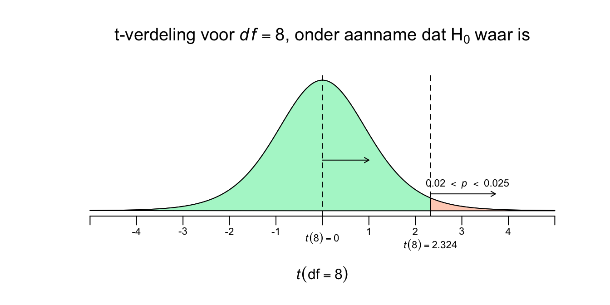
Figuur 4.22: -
- Stap 3: Doe een beslissing en trek je conclusie:
- Als jouw \(p\)-waarde kleiner of gelijk is dan de \(\alpha\) waarmee je moet toetsen, dus het significantieniveau, waarbij meestal \(\alpha = .05\) geldt (tenzij anders vermeld in tekst of tentamen-opgave), dan verwerp je de \(H_0\) en kun je dus zeggen dat de \(H_1\) waarschijnlijk (waar) is. Als je \(p\)-waarde groter is dan de vooropgestelde \(\alpha\) dan kun je de \(H_0\) niet verwerpen.
- \(p \leq \alpha\) dan \(H_0\) verwerpen
- \(p > \alpha\) dan \(H_0\) verwerpen.
- onze eenzijdige \(p\) waarde ligt tussen de \(p = .020\) en de \(p=.025\), dus inderdaad kleiner dan \(\alpha = .05\)
- Dus \(H_0\) verwerpen (Waarmee de \(H_1\) dus waarschijnlijk is)
- Ook als \(\alpha = .025\), dan zou je nog steeds (net aan) de \(H_0\) verwerpen
- Als je zo conservatief was geweest en je \(\alpha = .02\) (of kleiner) had gehanteerd, dan zou je de \(H_0\) dus niet meer kunnen verwerpen.
- Als jouw \(p\)-waarde kleiner of gelijk is dan de \(\alpha\) waarmee je moet toetsen, dus het significantieniveau, waarbij meestal \(\alpha = .05\) geldt (tenzij anders vermeld in tekst of tentamen-opgave), dan verwerp je de \(H_0\) en kun je dus zeggen dat de \(H_1\) waarschijnlijk (waar) is. Als je \(p\)-waarde groter is dan de vooropgestelde \(\alpha\) dan kun je de \(H_0\) niet verwerpen.
Resultaat en Conclusie: Wij hebben onderzocht of de populatie aapjes van tegenwoordig, gemiddeld gezien groter zijn dan vroeger (\(M_{\text{vroeger}} = 135\), zo heeft Jane Goodall mij verteld). Het steekproefgemiddelde uit de populatie van nu (\(n=9\), \(M = 150\), \(SD = 19.36\)) blijkt \(15\) cm hoger te liggen en blijkt significant af te wijken van \(135\) cm (\(t(8)=2.32\), \(.02 < p .025\) (of \(p = .024\)), éénzijdig) We kunnen dus concluderen dat aapjes van tegenwoordig, gemiddeld gezien, waarschijnlijk echt groter zijn dan vroeger. Of we daar blij mee moeten zijn en welke practische implicaties (grotere dieren eten meer, terwijl er al zoveel bomen zijn omgehakt) dit met zich meedraagt, weet ik eigenlijk niet.
Linkszijdige Toetsing
Als we een linkszijdige onderzoeksvraagstelling hadden gehad hadden we snel kunnen stoppen in ons geval. Een linkszijdige toetsing is (dus de alternatieve hypothese is linkszijdig), met onze aapjes, het gevonden steekproefgemiddelde (\(\overline = 150\)) en een \(H_0\) die stelt: \(\mu_0 = 135\), doet nogal vreemd aan en zal (gelukkig) niet heel vaak voorkomen, maar wel leuk om vast te wennen aan verschillende, tegengestelde uitkomsten en gekke richtingen, dus we gaan het gewoon even doen. Dus stel dat we juist hadden willen onderzoeken of aapjes van nu, juist kleiner zijn geworden in vergelijking met het gemiddelde van \(50\) jaar geleden (\(\mu_0 = 135\)). In dat geval zou onze alternatieve hypothese dus linkszijdig zijn:
- Nul-hypothese in woorden: de twee populatie gemiddelden zijn hetzelfde, of formeel;
- \(H_0\): \(\:\mu_{\text{aapjes tegenwoordig}} = \mu_{\text{aapjes 50 jaar geleden}}\)
- \(H_0\): \(\:\mu_{\text{aapjes tegenwoordig}} = 135\)
- \(H_0\): \(\:\mu_{\text{aapjes tegenwoordig}} = \mu_{0} = 135\)
- Alternatieve-hypothese in woorden: Het populatie gemiddelde van tegenwoordig ligt lager dan dat van \(50\) jaar geleden of formeel;
- \(H_1\): \(\:\mu_{\text{aapjes tegenwoordig}} < \mu_{\text{aapjes 50 jaar geleden}}\)
- \(H_1\): \(\:\mu_{\text{aapjes tegenwoordig}} < 135\)
- \(H_1\): \(\:\mu_{\text{aapjes tegenwoordig}} < \mu_0\)
Daar gaan we weer:
- Stap 1: Schets de steekproevenverdeling onder aanname dat de \(H_0\) waar is, we toetsen immers de ‘houdbaarheid’ van de \(H_0\):
- Zet je \(H_0\) verwachting (\(\mu_0 = 135\)) in het midden
- Bereken de standaard error voor het gemiddelde \(SE_{\bar{y}} = S_y/\sqrt{n}\)
- \(SE_{\bar{y}} = 19.365/\sqrt{9} = 6.455\)
- Zet je enige echte steekproefgemiddelde erin (\(\overline{Y} = 150\)) en beoordeel zelf vast grofjes of je (voldoende) bewijs (verschil) ziet om de \(H_0\) te verwerpen:
- kijk of het gemiddelde ook echt daadwerklijk links van \(\mu_0\) zit en dus lager is, zo niet, zit hij rechts, zou je dus al meteen kunnen stoppen, omdat je dan al weet dat het niet in die richting zit zoals jij gesteld had in de alternatieve hypothese (en daardoor kun je sowieso de \(H_0\) niet verwerpen). Hier gaat het dus mis bij ons, maar wij gaan door omdat ik wel de juiste \(p\)-waarde wil weten!
- kijk vast hoeveel standaard errors het enige echte gemiddelde van het midden verwijderd zit.
- ruim twee standaard errors (in de verdkeerde richting)
- Maak een schatting van je linkszijdige \(p\)-waarde, dus de kans op alles links van jouw gemiddelde.
- We hebben de linker staart nodig dus die heel groot, ongeveer \(p =.975\)
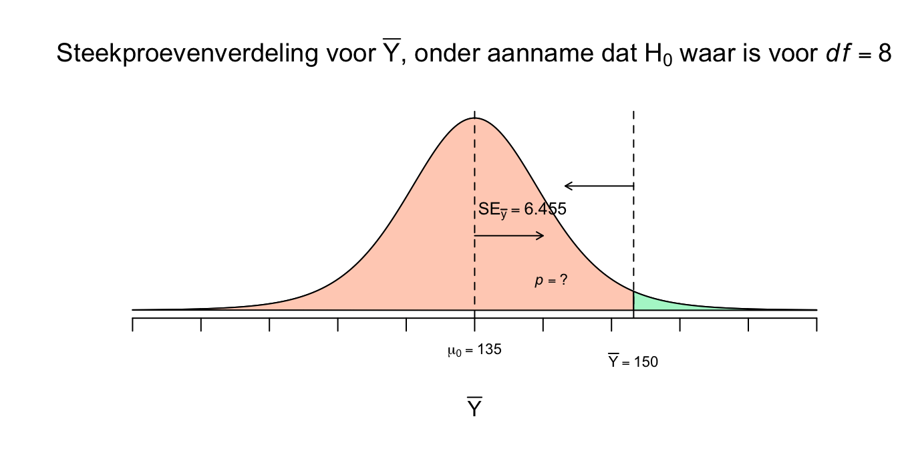
Figuur 4.23: -
- Stap 2: We gaan over tot standaardizatie (om uiteindelijk de \(p\)-waarde te kunnen opzoeken. Schets nu de \(t\)-verdeling en
- Bereken je bijbehorende toetsstatistiek, jouw \(t\)-waarde dus.
- \(t(df) = \frac{\overline{Y} - \mu_0}{SE_{\bar{y}}}\)
- \(t(df) = (150-135)/6.455 = 3.324\) dus;
- \(t(8) = 3.32\)
- \(t(df) = \frac{\overline{Y} - \mu_0}{SE_{\bar{y}}}\)
- Bereken het aantal te gebruiken vrijheidsgraden (als je dat al niet had gedaan):
- \(df = n-1 = 9-1 = 8\)
- Zet je \(t\)-waarde in de schets en zoek de juiste éénzijdige \(p\)-waarde op (bij het juiste aantal vrijheidsgraden) en zet de gevonden \(p\)-waarde bij de rechter staart in je schets.
- Is je alternatieve hypothese éénzijdig, dan ben je klaar en kun je over tot een beslissing op basis van je éénzijdige \(p\)-waarde.
- Is je alternatieve hypothese twéézijdig, dan vermenigvuldig je jouw gevonden \(p\) waarde nog met \(2\) voordat je kunt overgaan tot een beslissing.
- Is je alternatieve hypothese éénzijdig, dan ben je klaar en kun je over tot een beslissing op basis van je éénzijdige \(p\)-waarde.
- Bereken je bijbehorende toetsstatistiek, jouw \(t\)-waarde dus.
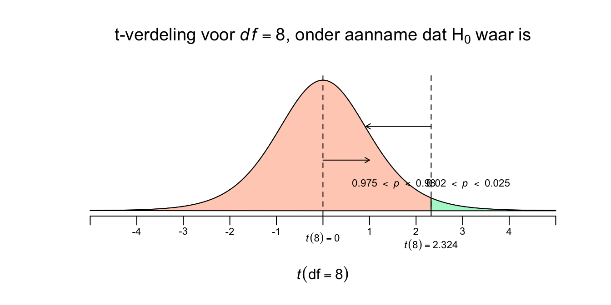
Figuur 4.24: -
- Stap 3: Doe een beslissing en trek je conclusie:
- Als jouw \(p\)-waarde kleiner of gelijk is dan de \(\alpha\) waarmee je moet toetsen, dus het significantieniveau, waarbij meestal \(\alpha = .05\) geldt (tenzij anders vermeld in tekst of tentamen-opgave), dan verwerp je de \(H_0\) en kun je dus zeggen dat de \(H_1\) waarschijnlijk (waar) is. Als je \(p\)-waarde groter is dan de vooropgestelde \(\alpha\) dan kun je de \(H_0\) niet verwerpen.
- \(p \leq \alpha\) dan \(H_0\) verwerpen
- \(p > \alpha\) dan \(H_0\) verwerpen.
- onze eenzijdige \(p\) waarde ligt tussen de \(p = .975\) en de \(p=.980\), dus veel groter dan \(\alpha = .05\)
- Dus \(H_0\) niet verwerpen (Waarmee de \(H_1\) dus zeer _on_waarschijnlijk is)
- Als jouw \(p\)-waarde kleiner of gelijk is dan de \(\alpha\) waarmee je moet toetsen, dus het significantieniveau, waarbij meestal \(\alpha = .05\) geldt (tenzij anders vermeld in tekst of tentamen-opgave), dan verwerp je de \(H_0\) en kun je dus zeggen dat de \(H_1\) waarschijnlijk (waar) is. Als je \(p\)-waarde groter is dan de vooropgestelde \(\alpha\) dan kun je de \(H_0\) niet verwerpen.
Resultaat en Conclusie: Wij hebben onderzocht of de populatie aapjes van tegenwoordig, gemiddeld gezien kleiner zijn dan vroeger (\(M_{\text{vroeger}} = 135\), Ja ja, Good old Jane Goodall). Het steekproefgemiddelde uit de populatie van nu (\(n=9\), \(M = 150\), \(SD = 19.36\)) blijkt \(15\) cm bleek tegen onze verwachting juist hoger te liggen. We kunnen dus ook niet concluderen dat aapjes tegenwoordig gemiddeld kleiner zijn, (\(t(8)=2.32\), \(p = .98\), linkszijdig). De verwachting dat aapjes gemiddeld kleiner zijn geworden (vanwege een tekort aan gezond voedsel), kan dus niet worden bevestigd. Vervolg onderzoek is nodig om te kijken welke redenen zouden kunnen verklaren dat ze toch qua lengte niet kleiner zijn geworden. Verder zou kunnen worden onderzocht of aapjes van tegenwoordig juist groter zijn geworden.
4.5 Significantietoetsen en Betrouwbaarheidsintervallen
Wanneer je een significantietoets doet, hoort daar altijd een stelsel van hypotheses bij (gebaseerd op je onderzoeksvraag), ja, altijd dus. Super belangrijk is dat je beseft dat je hierbij de \(H_0\) dus eigenlijk toetst: Je doet alsof de \(H_0\) waar is en je kijkt wat je onder die \(H_0\) verwachting allemaal voor steekproefgemiddelden zou kunnen verwachten (je steekproevenverdeling onder de \(H_0\)). Vervolgens pas kijk je naar je enige echte en vraag je je af of dat had gekund, gegeven de \(H_0\). Als onwaarschijnlijk, en je dus schrikt, dan verwerp je de \(H_0\) (Je had brood verwacht maar kreeg een fiets)
Wanneer je een betrouwbaarheidsinterval berekend, dan heb je nooit een \(H_0\) nodig om de lower en de upperbound uit te rekenen. Laat dat alsjeblieft duidelijk zijn. De bijbehorende onderzoeksvraag is hier altijd in de trend van: “Wat is er aan de hand in de populatie?”, dus bij een gemiddelde: “Wat is het populatie gemiddelde?”. En antwoorden (conclusies) als “Ja, dat is waarschijnlijk?”, slaan hier totaal de plank mis. Je uitgangspunt (én antwoord) is altijd je steekproefstatistiek (bijvoorbeeld \(\overline{Y}\)), die je gebruikt als puntschatting voor (populatie) parameter (bijvoorbeeld \(\mu_y\)). Ja, plus of min je margin of error (\(m\)) natuurlijk nog om die onder- en bovengrens voor je populatieschatting te bereiken.
En toch, kun je op basis van een betrouwbaarheidsinterval, óók een uitspraak doen (conclusie trekken) over de waarschijnlijkheid van de \(H_0\) (dan wel \(H_1\)). Leuk hè? Dit kan alleen als je betrouwbaarheidsniveau (confidence level \(CL\)), qua strengheid, overeenkomt met het significantieniveau (\(\alpha\)). De conclusie bij over de waarschijnlijkheid van de \(H_0\) bij een tweezijdige significantietoets met \(\alpha = .05\), is precies hetzelfde als de conclusie over die \(H_0\) bij een betrouwbaarheidsinterval met een confidence level van \(95\) procent. In het algemeen:
- Bij tweezijdige toetsing kun je dus kiezen. Doe je een toets of maak je een betrouwheidsinterval? Maakt dus niet zolang je maar zorgt dat:
- \(CL = 1-\alpha\)
Dus als je bijvoorbeeld een toets doet met \(\alpha = .01\), had je dus net zo goed een Confidence Interval (\(CI\)) kunnen maken met een \(CL\) van \(99\) procent. Ik laat het even zien voor onze aapjes,wel zo makkelijk sinds we alle berekeningen al gedaan hebben.
- De steekproefgegevens:
- \(n = 9\), \(\overline{Y} = 150\), \(S_y = 19.365\)
- Aannamens: Sigma onbekend en scores normaal verdeeld.
- Het 95 procent betrouwbaarheidsinterval (\(CI_{95 \%}\)) voor hun gemiddelde lengte:
- \(\overline{Y} \pm t^{*} \cdot SE_{\bar{y}}\)
\(t^{*}\) dus opzoeken in de \(t\)-tabel bij een rechter staart van \(p=.025\) (of \(CI = 95\%\)) en \(df = n-1 =8\)
- Geeft \(t_{8}^{*} = 2.306\)
\(SE_{\bar{y}} = S_y / \sqrt{n} = 19.365/\sqrt{9} = 6.455\)
- Lowerbound: \(\overline{Y} \pm t^{*} \cdot SE_{\bar{y}} = 150 - 2.306 \cdot 6.455 = 135.11\)
- Lowerbound: \(\overline{Y} \pm t^{*} \cdot SE_{\bar{y}} = 150 + 2.306 \cdot 6.455 = 164.89\)
- \(\overline{Y} \pm t^{*} \cdot SE_{\bar{y}}\)
\[CI_{.95} \: \text{for} \: \mu_y = [135.11;\:164.89]\] Conclusie: Het ware gemiddelde voor lengte ligt met \(95\) procent betrouwbaarheid ergens tussen de \(135.11\) en \(164.89\), dus met \(5\) procent zekerheid, ligt \(\mu_y\) daar dus buiten! Nu pas, haal ik het stelsel van hypothese erbij voor onze tweezijdige toetsing:
\[H_0: \: \mu_y = 135\] \[H_1: \: \mu_y \ne 135\]
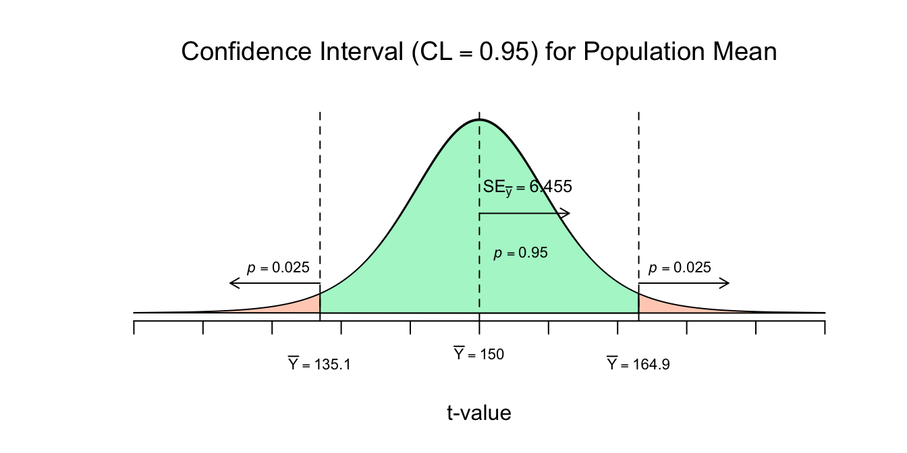
Figuur 4.25: -
En nu komt ie: Ligt jouw \(H_0\) verwachting (\(\mu_0 = 135\)) op het betrouwbaarheidsinterval, dus ergens tussen de twee grenzen, of ligt \(\mu_0\) daaronder (links) of daarboven (rechts)?
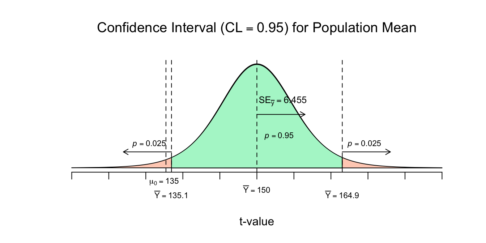
Figuur 4.26: -
Als je goed kijkt, zie je dat \(\mu_0\) (net) daarbuiten ligt, net iets links van de lowerbound! Is de \(H_0\) dan waarschijnlijk of juist onwaarschijnlijk (als je die verwachting dus met \(95\) procent zekerheid niet tegenkomt)? Omdat je die verwachting niet tegenkomt, is die dus onwaarschijnlijk en daarmee kun je dus de \(H_0\) verwerpen! Als onze \(\mu_0\) dus een andere waarde zou hebben gehad, zeg \(\mu_y = 140\), dan komen we deze verwachting dus wel tegen als we van de lowerbound naar de upperbound wandelen. \(\mu_y = 140\) ligt dus wel binnen onze verwachting en daarmee kunnen we die \(H_0\) (\(H_0: \: \mu_y = 140\)) dus niet verwerpen.
Ook JASP geeft betrouwbaarheidsintervallen voor verschillende soorten parameters. Eigenlijk is hypothese toetsing een beetje ouderwets en filosofisch gezien niet echt verdedigbaar. Waarom zou je uitgaan van iets? Kijk gewoon wat er aan de hand is, zonder vooringenomen te zijn! Heel vreemd dus eigenlijk.. Maar goed, hypothesetoetsing dient wel een belangrijk doel vind ik. Namelijk, wat ik nooit uitgesproken heb gezegd, maar als je denkt in termen van ‘gegeven dat iets zo en zo zou zijn, dan…’, dan ben je conditioneel aan het denken. Een \(p\)-waarde is een conditionele kans (gegeven dat de \(H_0\) waar is, wat is de kans dat…). En als jij conditoneel flexibel kunt denken, kun je heerlijk en tastbaar dromen over hoe de wereld eruit had kunnen zien of veranderd als jij het is voor het zeggen zou hebben gehad!
4.6 Significantie Toets voor Verband, de Pearson Correlatie
Voor elke statistiek uit een steekproef bestaat een test (toets) om te kijken of de gevonden waarde in de steekproef significant afwijkt van een bepaald idee (de \(H_0\)-verwachting), zodat je kan beoordelen of je genoeg tegenbewijs (verschil) hebt gevonden om dat idee te moet laten varen of niet.
In Hoofdstuk 3 hebben we gekeken naar het (lineaire) verband tussen twee variabelen. Voor onze aapjes hebben we gekeken, in hoeverre hun leeftijd en hun lengte samenhangen en vonden een pearson correlatie van \(r_{xy} = .89\). Maar dit is het geobserveerde verband in onze steekproef. Wij gaan kijken of we dit gevonden verband kunnen generaliseren naar de achterliggende populatie. In het volgende hoofdstuk ga ik wat dieper in op de populatie-aannames die horen bij een toets voor verband. Voor nu, doe ik alleen even de bijbehorende significantietoets en check dus niet de bijbhorende populatie-assumpties.
- Onderzoeksvraag: Is er een samenhang tussen leeftijd en lengte in de populatie (jonge) aapjes? Omdat ik in mijn onderzoeksvraag in het midden heb gelaten of dit verband positief of negatief is, hebben we een tweezijdige alternatieve hypothese nodig:
- \(H_0:\:\rho_{xy} = 0\), dus geen verband
- \(H_0:\:\rho_{xy} \ne 0\), wel verband (positief of negatief).
- Onze gegevens over de enige echte steekproef (ik neem een iets preciezere waarde voor \(r_{xy}\), zie hoofdstuk 3:
- \(r_{xy} = .8944\), \(n=9\).
Ook een correlatie (\(r_{xy}\)) gedraagt zich volgens de ‘\(t\)’-verdeling, en zullen we dus de bijbehorende toets-statistiek \(t\) moeten uitrekenen en zijn \(p\)-waarde moeten opzoeken in de tabel (bij een juiste aantal vrijheidsgraden), zodat we een conclusie kunnen trekken. Ook hier kan je in plaatjes of schetsen denken, maar ik laat het hier even achterwege. Zodat je ook ziet, hoe het snel kan. Goed, eerst de formule voor de \(t\)-toets voor correlatie:
\[t(df) = \frac{r_{xy} \cdot \sqrt{n-2}}{\sqrt{1-r_{xy}^2}}\:\:\text{met}\:\: df = n-2\] Niet heel gek, we hebben het nu over twee variabelen, vandaar \(df = n-2\), maar denk er vooral niet te veel over na, nergens voor nodig. Invullen voor het aantal vrijheidsgraden geeft \(df = 9-2 = 7\) en als we onze gegevens in de formule voor \(t\) gooien, krijgen we:
- Met tussen stapjes, zodat je met rekenregels kunt oefenen.
\[t(7) = \frac{.8944 \cdot \sqrt{9-2}}{1-.8944^2}\] \[t(7) = \frac{.8944 \cdot \sqrt{7}}{\sqrt{1 - 0.7999514}}\] \[t(7) = \frac{.8944 \cdot 2.645751}{\sqrt{0.2000486}}\] \[t(7) = \frac{2.36636}{0.4472679} = 5.291\]
In één keer intypen kan natuurlijk ook:
ouderwetse rekenmachientje: \(t(7) = .8944 \cdot \sqrt{}(9-7) / \sqrt{}(1 - .8944^2) = 5.291\)
nieuwerwets \(1\): \(t(7) = .8944 \cdot \sqrt{9-7} / \sqrt{1 - .8944^2} = 5.291\)
nieuwerwets \(2\): \(t(7) = \frac{.8944 \cdot \sqrt{9-7}}{\sqrt{1 - .8944^2}} = 5.291\)
- Dus: \(t(7) = 5.29\)
We zijn er bijna, alleen nog \(p\)-waarde op zoeken, zie \(t\)-tabel in de appendix. Dus eerst kijk je voor één staart en dan verdubbelen. Onze \(t\)-waarde is behoorlijk ver weg van het midden (dus extreem) en heeft dus een heel klein mini staartje. We zoeken bij \(df = 7\). Onze \(t\)-waarde (\(t(7) = 5.291\)) ligt tussen \(t^{*} = 4.785\) (met \(p = .001\)) en \(t^{*} = 5.408\) (met \(p = .0005\)). Onze \(p\) ligt dus tussen de \(p = .0005\) en \(p = .001\) ofwel: \(.0005 < p < .0010\) éénzijdig.
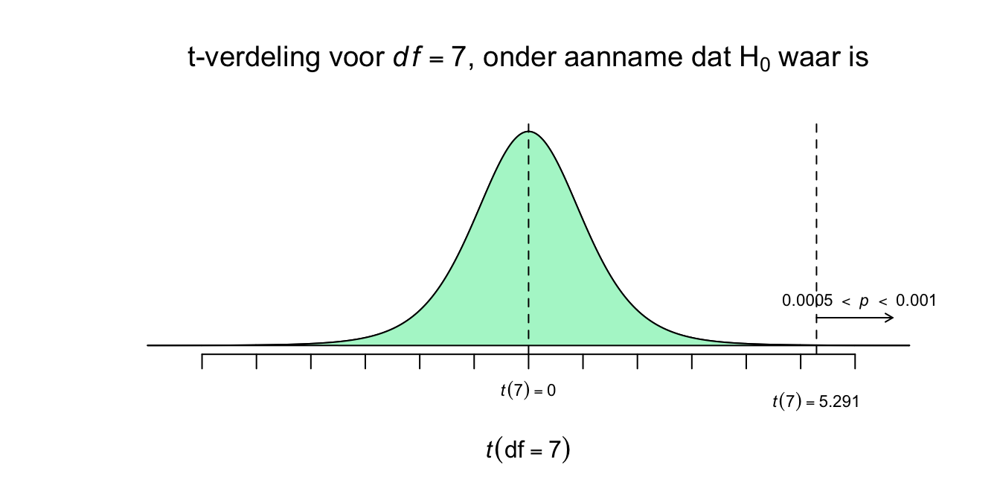
Figuur 4.27: -
Wij willen een tweezijdige overschrijdingskans (\(p\)-waarde), dus de twee uiterste verdubbelen en geeft een tweezijdige overschrijdingskans (op onze correlatie, gegeven dat de \(H_0\) waar is) van \(.0010 < p < .0020\), super klein dus. Een fiets en dus zeker geen brood of koekje, er moet dus wel verband zijn!
Conclusie: Zelfs als we zouden toetsen met \(\alpha = .01\), zelfs dan kunnen we nog zeggen: \(p\) is low, so H-O must go!
Conclusie in woorden: Geen verband is onwaarschijnlijk dus een (positief) verband tussen leeftijd en lengte is aannemelijk.
Conclusie voor het volk:
Uit onderzoek naar aapjes rond de leeftijd van 1 à 2 jaar, bleek dat relatief jongere aapjes over het algemeen wat kleiner zijn dan oudere aapjes.’
Conclusie voor ons: (wij willen keiharde cijfers zien):
Om te onderzoeken of er een samenhang bestaat tussen de leeftijd van aapjes en hun lengte, is een steekproef (\(n = 9\)) genomen (op een heel mooi én representatief eiland). Uit de uitgevoerde analyse blijkt een positieve, lineaire samenhang voor de De Pearson correlatie (\(r = .89\)). Het gevonden verband wijkt significant af van nul (\(t(7) = 5.29\), \(p = .011\), tweezijdig). We kunnen dus ook concluderen dat bij aapjes, zo rond de \(1\) à \(2\) jaar, de relatief jongere aapjes over het algemeen kleiner zijn dan oudere aapjes.
Leuk hoor zo’n correlatie en dat je dus weet dat er een positief verband mag worden aangenomen. Maar weet je dan ook, aan de hand van de gevonden correlatie (\(r = .89\)), hoelang een aapje van zeg \(1\) zou moeten zijn? Nee dat ‘vertelt’ de correlatie je niet, maar daar veel meer over in Hoofdstuk 5, Alles is immers Regressie, we doen niet anders!